trio_phasing_results
Andy Beck
2024-05-20
Last updated: 2024-06-06
Checks: 7 0
Knit directory: phasing_clean/
This reproducible R Markdown analysis was created with workflowr (version 1.7.1). The Checks tab describes the reproducibility checks that were applied when the results were created. The Past versions tab lists the development history.
Great! Since the R Markdown file has been committed to the Git repository, you know the exact version of the code that produced these results.
Great job! The global environment was empty. Objects defined in the global environment can affect the analysis in your R Markdown file in unknown ways. For reproduciblity it’s best to always run the code in an empty environment.
The command set.seed(20240501) was run prior to running
the code in the R Markdown file. Setting a seed ensures that any results
that rely on randomness, e.g. subsampling or permutations, are
reproducible.
Great job! Recording the operating system, R version, and package versions is critical for reproducibility.
Nice! There were no cached chunks for this analysis, so you can be confident that you successfully produced the results during this run.
Great job! Using relative paths to the files within your workflowr project makes it easier to run your code on other machines.
Great! You are using Git for version control. Tracking code development and connecting the code version to the results is critical for reproducibility.
The results in this page were generated with repository version fccb083. See the Past versions tab to see a history of the changes made to the R Markdown and HTML files.
Note that you need to be careful to ensure that all relevant files for
the analysis have been committed to Git prior to generating the results
(you can use wflow_publish or
wflow_git_commit). workflowr only checks the R Markdown
file, but you know if there are other scripts or data files that it
depends on. Below is the status of the Git repository when the results
were generated:
Ignored files:
Ignored: .Rhistory
Ignored: .Rproj.user/
Ignored: .ipynb_checkpoints/
Ignored: chr22_10k.bed
Ignored: data/1kgp/chr10_pilot_mask.bed
Ignored: data/1kgp/chr15/
Ignored: data/1kgp/chr22/
Ignored: data/1kgp/chr8/
Ignored: data/1kgp/chrX.vcf.gz
Ignored: data/1kgp/chrX.vcf.gz.tbi
Ignored: data/1kgp/chrX_2504_snps_noPAR.bcf
Ignored: data/1kgp/chrX_2504_snps_noPAR_noSing.bcf
Ignored: data/1kgp/chrX_freq.tsv
Ignored: data/1kgp/chrX_maf.tsv
Ignored: data/1kgp/chrX_pilot_mask.bed
Ignored: data/chr10.sizes
Ignored: data/chr15.1kb.sorted.bed
Ignored: data/chr15.fasta
Ignored: data/chr15.sizes
Ignored: data/chr15_gc1kb_pilot.bed
Ignored: data/chr15_mask.fasta
Ignored: data/chr15_mask.fasta.fai
Ignored: data/chr22.sizes
Ignored: data/chr8.sizes
Ignored: data/chrX.1kb.sorted.bed
Ignored: data/chrX.fasta
Ignored: data/chrX.fasta.fai
Ignored: data/chrX.sizes
Ignored: data/chrX_gc1kb_pilot.bed
Ignored: data/chrX_mask.fasta
Ignored: data/chrX_mask.fasta.fai
Ignored: data/decode/
Ignored: data/hg38.chrom.sizes
Ignored: data/mask_pilot_15_fasta.bed
Ignored: data/mask_pilot_X_fasta.bed
Ignored: data/ref_GRCh38.fna
Ignored: data/ref_GRCh38.fna.fai
Ignored: data/ref_GRCh38.fna.in
Ignored: data/ref_maps/
Ignored: output/switch_errors/
Ignored: output/trio_phase/
Ignored: output/trio_phase_15/
Ignored: output/trio_phase_22/
Untracked files:
Untracked: scratch/
Note that any generated files, e.g. HTML, png, CSS, etc., are not included in this status report because it is ok for generated content to have uncommitted changes.
These are the previous versions of the repository in which changes were
made to the R Markdown (analysis/trio_phasing_results.Rmd)
and HTML (docs/trio_phasing_results.html) files. If you’ve
configured a remote Git repository (see ?wflow_git_remote),
click on the hyperlinks in the table below to view the files as they
were in that past version.
| File | Version | Author | Date | Message |
|---|---|---|---|---|
| Rmd | fccb083 | Andy Beck | 2024-06-06 | wflow_publish("analysis/trio_phasing_results.Rmd") |
| html | ef01021 | Andy Beck | 2024-06-06 | Build site. |
| html | f289c04 | Andy Beck | 2024-06-06 | Build site. |
| html | bd1d867 | Andy Beck | 2024-06-05 | Build site. |
| Rmd | 9d865f3 | Andy Beck | 2024-06-05 | wflow_publish("analysis/trio_phasing_results.Rmd") |
| html | ec0ba0b | Andy Beck | 2024-05-29 | Build site. |
| html | 9a4bd3e | Andy Beck | 2024-05-29 | Build site. |
| Rmd | 6dd2d47 | Andy Beck | 2024-05-29 | wflow_publish(c("analysis/trio_phasing_results.Rmd")) |
| html | cd54733 | Andy Beck | 2024-05-29 | Build site. |
| Rmd | e611ebe | Andy Beck | 2024-05-29 | wflow_publish(c("analysis/trio_phasing_results.Rmd")) |
| html | 34c040a | Andy Beck | 2024-05-29 | Build site. |
| Rmd | 5ba3e67 | Andy Beck | 2024-05-29 | wflow_publish("analysis/trio_phasing_results.Rmd") |
| html | 808cfb8 | Andy Beck | 2024-05-29 | Build site. |
| html | d6dca59 | Andy Beck | 2024-05-29 | Build site. |
| Rmd | f1bf0ba | Andy Beck | 2024-05-29 | wflow_publish(c("analysis/synthetic_diploid_results.Rmd", "analysis/trio_phasing_results.Rmd")) |
| html | 8041a90 | Andy Beck | 2024-05-29 | Build site. |
| Rmd | 0669558 | Andy Beck | 2024-05-29 | wflow_publish(c("analysis/synthetic_diploid_results.Rmd", "analysis/trio_phasing_results.Rmd")) |
| html | 17d41d5 | Andy Beck | 2024-05-22 | Build site. |
| Rmd | 3601740 | Andy Beck | 2024-05-22 | wflow_publish("analysis/trio_phasing_results.Rmd") |
| html | 4aa7b80 | Andy Beck | 2024-05-22 | Build site. |
| Rmd | 3bc45e1 | Andy Beck | 2024-05-22 | wflow_publish("analysis/trio_phasing_results.Rmd") |
| html | d7d8f5a | Andy Beck | 2024-05-22 | Build site. |
| Rmd | 0fdea9e | Andy Beck | 2024-05-22 | wflow_publish("analysis/trio_phasing_results.Rmd") |
| html | da672c2 | Andy Beck | 2024-05-22 | Build site. |
| Rmd | ab88699 | Andy Beck | 2024-05-22 | wflow_publish("analysis/trio_phasing_results.Rmd") |
| html | 4255fdf | Andy Beck | 2024-05-21 | Build site. |
| Rmd | 610b7e2 | Andy Beck | 2024-05-21 | wflow_publish("analysis/trio_phasing_results.Rmd") |
| html | 1f7bff3 | Andy Beck | 2024-05-21 | Build site. |
| Rmd | 2aa6265 | Andy Beck | 2024-05-21 | wflow_publish("analysis/trio_phasing_results.Rmd") |
| html | ddd4d13 | Andy Beck | 2024-05-21 | Build site. |
| Rmd | 51a14cf | Andy Beck | 2024-05-21 | wflow_publish("analysis/trio_phasing_results.Rmd") |
| html | 60c7dfc | Andy Beck | 2024-05-20 | Build site. |
| Rmd | 91a7ac8 | Andy Beck | 2024-05-20 | wflow_publish("analysis/trio_phasing_results.Rmd") |
| html | ac90be7 | Andy Beck | 2024-05-20 | Build site. |
| Rmd | fa87641 | Andy Beck | 2024-05-20 | wflow_publish("analysis/trio_phasing_results.Rmd") |
Introduction
Here in this document we present figures, tables, and statistics for the phasing evaluation on chromosome 15. This sample consists of 602 individuals phased using a reference panel of unrelated individuals from the 1000 genomes project. The phasing results are compared to a pedigree-adjusted phased genome for each sample.
Libraries and Data
library(tidyverse)
library(pander)
library(reactable)
library(yaml)
library(gtsummary)
library(grid)
library(gridExtra)
config_obj <- yaml::read_yaml("_config.yaml")
cbPalette <- c("#999999", "#E69F00", "#56B4E9", "#009E73", "#F0E442", "#0072B2", "#D55E00", "#CC79A7")
df_subj <- read_csv("data/1kgp/subject_info.csv")
ped_df <- read_table("data/1kgp/1kGP.3202_samples.pedigree_info.txt")
child_ids <- ped_df %>% filter(fatherID != "0" & motherID != "0") %>% pull(sampleID)
unrel_ids <- scan("data/1kgp/unrelated_subjects.txt", what = character())
df_subj_rel <- df_subj %>%
filter(SAMPLE_NAME %in% child_ids)
df_subj_rel$id2 <- 1:602
df_subj_unrel <- df_subj %>%
filter(SAMPLE_NAME %in% unrel_ids)
df_switch_trio <- read_csv(paste0(config_obj$base_dir,"/",
config_obj$trio_result_dir, "/switch_errors/summary.csv"))
df_switch_trio_22 <- read_csv(paste0(config_obj$base_dir,
"/output/trio_phase_22/switch_errors/summary.csv"))
df_het <- read_tsv(paste0(config_obj$base_dir, "/", config_obj$trio_result_dir, "/het_pos_count.tsv"),
col_names = c("id", "n_het"))
df_het_22 <- read_tsv(paste0(config_obj$base_dir, "/output/trio_phase_22/het_pos_count.tsv"),
col_names = c("id", "n_het22"))
n_var_site <- 1627002
n_var_site_22 <- 767007
df_het$frac_het <- df_het$n_het / n_var_site
df_het_22$frac_het22 <- df_het_22$n_het22 / n_var_site_22
df_subj_rel <- left_join(df_subj_rel, df_het, by = c("id2" = "id")) %>%
left_join(df_het_22, by = c("id2" = "id"))
df_triple_het <- read_tsv(paste0(config_obj$base_dir, "/", config_obj$trio_result_dir, "/triple_het.tsv"),
col_names = c("id", "n_t_het"))
df_subj_rel <- left_join(df_subj_rel, df_triple_het, by = c("id2" = "id"))
df_subj_rel$frac_t_het <- df_subj_rel$n_t_het / df_subj_rel$n_het
df_triple_het22 <- read_tsv(paste0(config_obj$base_dir, "/output/trio_phase_22/triple_het.tsv"),
col_names = c("id", "n_t_het22"))
df_subj_rel <- left_join(df_subj_rel, df_triple_het22, by = c("id2" = "id"))
df_subj_rel$frac_t_het22 <- df_subj_rel$n_t_het22 / df_subj_rel$n_het22
df_switch_trio <- left_join(df_switch_trio, df_triple_het, by=c("pair_id" = "id"))
df_switch_trio_22 <- left_join(df_switch_trio_22, df_triple_het22, by=c("pair_id" = "id"))
maf_prop_df <- read_csv(paste0(config_obj$base_dir,"/output/trio_phase_15/maf_props.csv"))
maf_prop_df <- left_join(maf_prop_df,
{df_subj_rel %>%
select(id2, POPULATION, SUPER, sex, n_het, n_t_het)},
by = c("id" = "id2"))Chr X Results
We’ll also pull in the results on chromosome X for the synthetic diploids to allow for comparisons of rates between 15 and X.
sd_pair_info_df <- read_delim("data/sample_pairs.csv", col_names = c("POP", "ID1", "ID2"))Rows: 1000 Columns: 3
── Column specification ────────────────────────────────────────────────────────
Delimiter: ","
chr (3): POP, ID1, ID2
ℹ Use `spec()` to retrieve the full column specification for this data.
ℹ Specify the column types or set `show_col_types = FALSE` to quiet this message.sd_pair_info_df <- left_join(sd_pair_info_df, df_subj, by = c("ID1"="SAMPLE_NAME")) %>%
rename(SP = SUPER) %>%
select(-POPULATION)
df_switch_x <- read_csv(paste0(config_obj$base_dir,"/output/switch_errors/switch_errors/summary.csv"))Rows: 1000 Columns: 45
── Column specification ────────────────────────────────────────────────────────
Delimiter: ","
chr (2): pop, subpop
dbl (43): pair_id, n_switch_eagle, n_switch_beagle, n_switch_shapeit, n_flip...
ℹ Use `spec()` to retrieve the full column specification for this data.
ℹ Specify the column types or set `show_col_types = FALSE` to quiet this message.df_het_x <- read_tsv(paste0(config_obj$base_dir, "/output/switch_errors/het_pos_count.tsv"), col_names = c("id", "n_het"))Rows: 1000 Columns: 2
── Column specification ────────────────────────────────────────────────────────
Delimiter: "\t"
dbl (2): id, n_het
ℹ Use `spec()` to retrieve the full column specification for this data.
ℹ Specify the column types or set `show_col_types = FALSE` to quiet this message.n_var_site_x <- 1722954
df_het_x$frac_het <- df_het_x$n_het / n_var_site_x
sd_pair_info_df$n_het <-df_het_x$n_het
sd_pair_info_df$frac_het <-df_het_x$frac_hetSubject Information
The 1000 Genomes collection of 3,202 genomes is sampled from 26 different populations, each belonging to 1 of 5 distinct super-populations (AFR, AMR, EAS, EUR, SAS). All 26 populations are represented in the 2,504 1kGP phase 3 subjects, but not all are present in the 602 trios sequenced by the New York Genome Center:
df_subj %>%
group_by(SUPER, POPULATION) %>%
summarize(N = n()) %>%
reactable(
groupBy = c("SUPER"),
columns = list(
N = colDef(aggregate = "sum")),
bordered = TRUE,
defaultExpanded = TRUE)`summarise()` has grouped output by 'SUPER'. You can override using the
`.groups` argument.df_subj_rel %>%
group_by(SUPER, POPULATION) %>%
summarize(N = n()) %>%
reactable(
groupBy = c("SUPER"),
columns = list(
N = colDef(aggregate = "sum")),
bordered = TRUE,
defaultExpanded = TRUE)`summarise()` has grouped output by 'SUPER'. You can override using the
`.groups` argument.df_subj_unrel %>%
group_by(SUPER, POPULATION) %>%
summarize(N = n()) %>%
reactable(
groupBy = c("SUPER"),
columns = list(
N = colDef(aggregate = "sum")),
bordered = TRUE,
defaultExpanded = TRUE)`summarise()` has grouped output by 'SUPER'. You can override using the
`.groups` argument.For completeness, we also tabulate other summary information about the 602 trios (which is just sex; 1 - male, 2 - female):
df_subj_rel %>%
group_by(sex) %>%
summarize(N = n()) %>%
reactable(
groupBy = c("sex"),
columns = list(
N = colDef(aggregate = "sum")),
bordered = TRUE,
defaultExpanded = TRUE)df_subj_unrel %>%
group_by(sex) %>%
summarize(N = n()) %>%
reactable(
groupBy = c("sex"),
columns = list(
N = colDef(aggregate = "sum")),
bordered = TRUE,
defaultExpanded = TRUE)Chromosome 15 Information
Things I’d like:
- Density of heterozygous SNPs per individual
- GC content of heterozygous positions
First let’s look at the density of heterozygous positions in each sample, i.e. what fraction of the sites are heterozygous.
df_subj_rel %>%
tbl_summary(
by = SUPER,
include = c(frac_het, frac_het22),
statistic = list(all_continuous() ~ "{mean} ({sd})",
all_categorical() ~ "{n} / {N} ({p}%)"))| Characteristic | AFR, N = 2011 | AMR, N = 1371 | EAS, N = 721 | EUR, N = 1071 | SAS, N = 851 |
|---|---|---|---|---|---|
| frac_het | 0.047 (0.001) | 0.036 (0.004) | 0.033 (0.001) | 0.034 (0.001) | 0.036 (0.002) |
| frac_het22 | 0.047 (0.002) | 0.036 (0.004) | 0.033 (0.003) | 0.036 (0.002) | 0.037 (0.003) |
| 1 Mean (SD) | |||||
df_subj_rel %>%
ggplot() +
stat_density(aes(x = frac_het, colour = SUPER),
geom="line",position="identity") +
theme_classic() +
ggtitle("Fraction of Sites Heterozygous", "Chromosome 15") +
labs(colour="Population") +
xlab("Fraction of Sites Heterozygous") +
scale_colour_manual(values=cbPalette)
| Version | Author | Date |
|---|---|---|
| ddd4d13 | Andy Beck | 2024-05-21 |
df_subj_rel %>%
ggplot() +
geom_boxplot(aes(x = frac_het, y = SUPER , fill = SUPER), show.legend = FALSE) +
theme_classic() +
ggtitle("Fraction of Sites Heterozygous", "Chromosome 15") +
labs(fill="Population") +
xlab("Fraction of Sites Heterozygous") +
ylab("Population") +
scale_fill_manual(values=cbPalette)
| Version | Author | Date |
|---|---|---|
| ddd4d13 | Andy Beck | 2024-05-21 |
df_subj_rel %>%
ggplot() +
geom_boxplot(aes(x = n_het, y = SUPER , fill = SUPER), show.legend = FALSE) +
theme_classic() +
ggtitle("Number of Heterozygous Sites", "Chromosome 15") +
labs(fill="Population") +
xlab("Number of Heterozygous Sites") +
ylab("Population") +
scale_fill_manual(values=cbPalette)
| Version | Author | Date |
|---|---|---|
| ddd4d13 | Andy Beck | 2024-05-21 |
How does this compare to what we observe in the X chromosome?
sd_pair_info_df %>%
tbl_summary(
by = SP,
include = c(frac_het),
statistic = list(all_continuous() ~ "{mean} ({sd})",
all_categorical() ~ "{n} / {N} ({p}%)"))| Characteristic | AFR, N = 2001 | AMR, N = 2001 | EAS, N = 2001 | EUR, N = 2001 | SAS, N = 2001 |
|---|---|---|---|---|---|
| frac_het | 0.058 (0.002) | 0.038 (0.007) | 0.031 (0.002) | 0.035 (0.002) | 0.037 (0.002) |
| 1 Mean (SD) | |||||
sd_pair_info_df %>%
ggplot() +
stat_density(aes(x = frac_het, colour = SP),
geom="line",position="identity") +
theme_classic() +
ggtitle("Fraction of Sites Heterozygous", "Chromosome X") +
labs(colour="Population") +
xlab("Fraction of Sites Heterozygous") +
scale_colour_manual(values=cbPalette)
| Version | Author | Date |
|---|---|---|
| ddd4d13 | Andy Beck | 2024-05-21 |
sd_pair_info_df %>%
ggplot() +
geom_boxplot(aes(x = frac_het, y = SP , fill = SP), show.legend = FALSE) +
theme_classic() +
ggtitle("Fraction of Sites Heterozygous", "Chromosome X") +
labs(fill="Population") +
xlab("Fraction of Sites Heterozygous") +
ylab("Population") +
scale_fill_manual(values=cbPalette)
| Version | Author | Date |
|---|---|---|
| ddd4d13 | Andy Beck | 2024-05-21 |
sd_pair_info_df %>%
ggplot() +
geom_boxplot(aes(x = n_het, y = SP , fill = SP), show.legend = FALSE) +
theme_classic() +
ggtitle("Number of Heterozygous Sites", "Chromosome X") +
labs(fill="Population") +
xlab("Number of Heterozygous Sites") +
ylab("Population") +
scale_fill_manual(values=cbPalette)
| Version | Author | Date |
|---|---|---|
| ddd4d13 | Andy Beck | 2024-05-21 |
And for another comparison, we’ll summarize heterozygosity by super population:
df_subj_rel %>%
group_by(SUPER) %>%
summarize(mean_het_15 = mean(frac_het)) %>%
left_join({ sd_pair_info_df %>%
group_by(SP) %>%
summarize(mean_het_x = mean(frac_het))
}, by = c("SUPER" = "SP")) %>%
mutate(x_15_ratio = mean_het_x/mean_het_15) %>%
knitr::kable()| SUPER | mean_het_15 | mean_het_x | x_15_ratio |
|---|---|---|---|
| AFR | 0.0471563 | 0.0579344 | 1.2285603 |
| AMR | 0.0356724 | 0.0384868 | 1.0788963 |
| EAS | 0.0332371 | 0.0314937 | 0.9475482 |
| EUR | 0.0344184 | 0.0351699 | 1.0218350 |
| SAS | 0.0359237 | 0.0369510 | 1.0285967 |
And finally, since samples are shared between 15 and 22, let’s look at how fraction of heterozygous sites looks like across chromosomes:
df_subj_rel %>%
ggplot(aes(frac_het, frac_het22, color = SUPER)) +
geom_point() +
geom_abline(slope = 1, intercept = 0) +
theme_classic() +
xlab("Chromosome 15 % Heterozygous") +
ylab("Chromosome 22 % Heterozygous") +
labs(color = "Population") +
scale_color_manual(values = cbPalette)
In addition, we also know how many heterozygous sites are triple heterozygous in each trio:
df_subj_rel %>%
ggplot(aes(x = frac_t_het, y = SUPER, fill = SUPER)) +
geom_boxplot(show.legend = FALSE) +
theme_classic() +
xlab("Triple Het Site Fraction") +
ylab("Population") +
scale_fill_manual(values = cbPalette) +
ggtitle("Fraction of heterozygous sites with triple heterozygotes", "Chromosome 15")
df_subj_rel %>%
ggplot(aes(x = frac_t_het22, y = SUPER, fill = SUPER)) +
geom_boxplot(show.legend = FALSE) +
theme_classic() +
xlab("Triple Het Site Fraction") +
ylab("Population") +
scale_fill_manual(values = cbPalette) +
ggtitle("Fraction of heterozygous sites with triple heterozygotes", "Chromosome 22")
df_subj_rel %>%
ggplot(aes(x = frac_t_het22, y = frac_t_het, color = SUPER)) +
geom_point() +
geom_abline(slope=1, intercept = 0) +
theme_classic() +
xlab("Chromosome 22") +
ylab("Chromosome 15") +
scale_color_manual(values = cbPalette) +
ggtitle("Fraction of heterozygous sites with triple heterozygotes")
df_subj_rel %>%
ggplot(aes(x = n_t_het22, y = n_t_het, color = SUPER)) +
geom_point() +
theme_classic() +
xlab("Chromosome 22") +
ylab("Chromosome 15") +
scale_color_manual(values = cbPalette) +
ggtitle("Triple Heterozygous Sites")
| Version | Author | Date |
|---|---|---|
| 17d41d5 | Andy Beck | 2024-05-22 |
df_subj_rel %>%
ggplot(aes(x = n_t_het, y = SUPER, fill = SUPER)) +
geom_boxplot(show.legend = FALSE) +
theme_classic() +
xlab("Triple Het Sites") +
ylab("Population") +
scale_fill_manual(values = cbPalette) +
ggtitle("Triple Heterozygotes Sites", "Chromosome 15")
| Version | Author | Date |
|---|---|---|
| 17d41d5 | Andy Beck | 2024-05-22 |
Switch Errors
Total Errors
cross_meth_plot <- function(df, p_title, p_func, pop, chrom="15") {
p1 <- p_func(df, "Beagle", "SHAPEIT", pop, chrom = chrom)
p_legend <- cowplot::get_legend(p1)
p1 <- p1 + guides(colour="none") + ggtitle(p_title, paste0("Chromosome ", chrom))
p2 <- p_func(df, "Beagle", "Eagle", pop, chrom = chrom) +
guides(colour="none") + ggtitle("", "")
p3 <- p_func(df, "SHAPEIT", "Eagle", pop, chrom = chrom) +
guides(colour="none") + ggtitle("", "")
return(grid.arrange(p1, p_legend, p2, p3, ncol = 2))
}
plot_total_errors <- function(df, m1, m2, pop, chrom="15"){
p <- df %>%
mutate(Beagle = (n_other_beagle + n_flip_beagle),
Eagle = (n_other_eagle + n_flip_eagle),
SHAPEIT = (n_other_shapeit + n_flip_shapeit)) %>%
ggplot(aes(x = !! sym(m1), y = !! sym(m2), colour = !! sym(pop))) +
geom_point() +
geom_abline(slope = 1, intercept = 0) +
ggtitle("Total Errors", paste0("Chromosome ", chrom)) +
theme_classic() +
xlab(m1) +
ylab(m2) +
labs(color="Population") +
scale_color_manual(values = cbPalette)
return(p)
}
table_total_errors <- function(df, pop){
res <- df %>%
mutate(Beagle = (n_other_beagle + n_flip_beagle),
Eagle = (n_other_eagle + n_flip_eagle),
SHAPEIT = (n_other_shapeit + n_flip_shapeit)) %>%
mutate(b_l_e = factor(Beagle < Eagle),
b_e_e = factor(Beagle == Eagle),
b_l_s = factor(Beagle < SHAPEIT),
e_l_b = factor(Beagle > Eagle),
e_l_s = factor(Eagle < SHAPEIT),
s_l_b = factor(SHAPEIT < Beagle),
s_l_e = factor(SHAPEIT < Eagle)) %>%
tbl_summary(by = !! sym(pop),
include = c(b_l_e, b_e_e, b_l_s, e_l_b, e_l_s, s_l_b, s_l_e))
return(res)
}
plot_total_errors(df_switch_trio, "Beagle", "Eagle", "SUPER")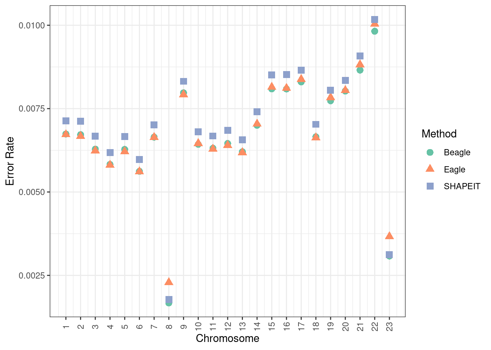
plot_total_errors(df_switch_trio, "Beagle", "SHAPEIT", "SUPER")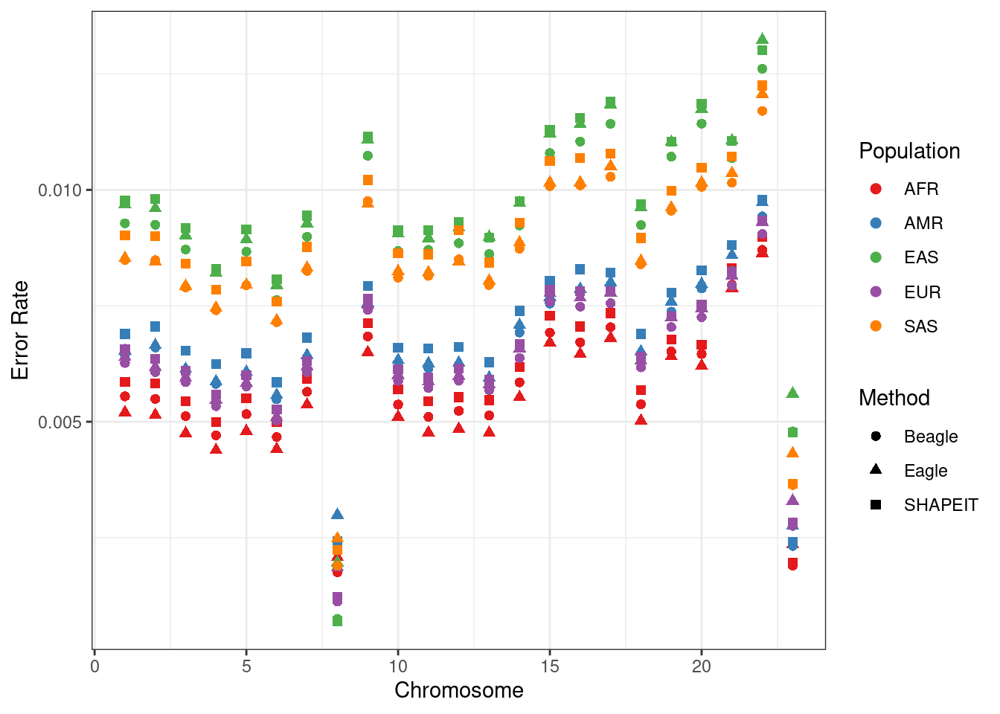
plot_total_errors(df_switch_trio, "SHAPEIT", "Eagle", "SUPER")
cross_meth_plot(df_switch_trio, "Total Errors", plot_total_errors, "SUPER", "15")Warning in get_plot_component(plot, "guide-box"): Multiple components found;
returning the first one. To return all, use `return_all = TRUE`.
table_total_errors(df_switch_trio, "SUPER")| Characteristic | AFR, N = 2011 | AMR, N = 1371 | EAS, N = 721 | EUR, N = 1071 | SAS, N = 851 |
|---|---|---|---|---|---|
| b_l_e | |||||
| FALSE | 140 (70%) | 50 (36%) | 12 (17%) | 35 (33%) | 42 (49%) |
| TRUE | 61 (30%) | 87 (64%) | 60 (83%) | 72 (67%) | 43 (51%) |
| b_e_e | |||||
| FALSE | 198 (99%) | 137 (100%) | 71 (99%) | 103 (96%) | 83 (98%) |
| TRUE | 3 (1.5%) | 0 (0%) | 1 (1.4%) | 4 (3.7%) | 2 (2.4%) |
| b_l_s | |||||
| FALSE | 27 (13%) | 13 (9.5%) | 18 (25%) | 28 (26%) | 8 (9.4%) |
| TRUE | 174 (87%) | 124 (91%) | 54 (75%) | 79 (74%) | 77 (91%) |
| e_l_b | |||||
| FALSE | 64 (32%) | 87 (64%) | 61 (85%) | 76 (71%) | 45 (53%) |
| TRUE | 137 (68%) | 50 (36%) | 11 (15%) | 31 (29%) | 40 (47%) |
| e_l_s | |||||
| FALSE | 22 (11%) | 36 (26%) | 31 (43%) | 48 (45%) | 17 (20%) |
| TRUE | 179 (89%) | 101 (74%) | 41 (57%) | 59 (55%) | 68 (80%) |
| s_l_b | |||||
| FALSE | 175 (87%) | 124 (91%) | 56 (78%) | 81 (76%) | 77 (91%) |
| TRUE | 26 (13%) | 13 (9.5%) | 16 (22%) | 26 (24%) | 8 (9.4%) |
| s_l_e | |||||
| FALSE | 180 (90%) | 103 (75%) | 42 (58%) | 62 (58%) | 70 (82%) |
| TRUE | 21 (10%) | 34 (25%) | 30 (42%) | 45 (42%) | 15 (18%) |
| 1 n (%) | |||||
And now chromosome 22:
plot_total_errors(df_switch_trio_22, "Beagle", "Eagle", "SUPER", 22)
plot_total_errors(df_switch_trio_22, "Beagle", "SHAPEIT", "SUPER", 22)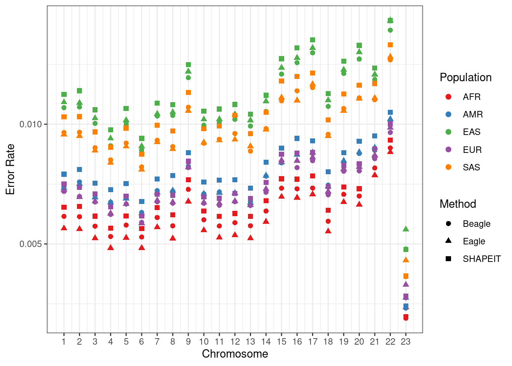
plot_total_errors(df_switch_trio_22, "SHAPEIT", "Eagle", "SUPER", 22)
cross_meth_plot(df_switch_trio, "Total Errors", plot_total_errors, "SUPER", "22")Warning in get_plot_component(plot, "guide-box"): Multiple components found;
returning the first one. To return all, use `return_all = TRUE`.
table_total_errors(df_switch_trio_22, "SUPER")| Characteristic | AFR, N = 2011 | AMR, N = 1371 | EAS, N = 721 | EUR, N = 1071 | SAS, N = 851 |
|---|---|---|---|---|---|
| b_l_e | |||||
| FALSE | 113 (56%) | 35 (26%) | 15 (21%) | 33 (31%) | 28 (33%) |
| TRUE | 88 (44%) | 102 (74%) | 57 (79%) | 74 (69%) | 57 (67%) |
| b_e_e | |||||
| FALSE | 197 (98%) | 136 (99%) | 72 (100%) | 102 (95%) | 84 (99%) |
| TRUE | 4 (2.0%) | 1 (0.7%) | 0 (0%) | 5 (4.7%) | 1 (1.2%) |
| b_l_s | |||||
| FALSE | 62 (31%) | 33 (24%) | 19 (26%) | 33 (31%) | 21 (25%) |
| TRUE | 139 (69%) | 104 (76%) | 53 (74%) | 74 (69%) | 64 (75%) |
| e_l_b | |||||
| FALSE | 92 (46%) | 103 (75%) | 57 (79%) | 79 (74%) | 58 (68%) |
| TRUE | 109 (54%) | 34 (25%) | 15 (21%) | 28 (26%) | 27 (32%) |
| e_l_s | |||||
| FALSE | 53 (26%) | 66 (48%) | 48 (67%) | 54 (50%) | 39 (46%) |
| TRUE | 148 (74%) | 71 (52%) | 24 (33%) | 53 (50%) | 46 (54%) |
| s_l_b | |||||
| FALSE | 143 (71%) | 108 (79%) | 54 (75%) | 76 (71%) | 64 (75%) |
| TRUE | 58 (29%) | 29 (21%) | 18 (25%) | 31 (29%) | 21 (25%) |
| s_l_e | |||||
| FALSE | 153 (76%) | 74 (54%) | 24 (33%) | 56 (52%) | 46 (54%) |
| TRUE | 48 (24%) | 63 (46%) | 48 (67%) | 51 (48%) | 39 (46%) |
| 1 n (%) | |||||
And finally, chromosome X:
plot_total_errors(df_switch_x, "Beagle", "Eagle", "pop", "X")
plot_total_errors(df_switch_x, "Beagle", "SHAPEIT", "pop", "X")
plot_total_errors(df_switch_x, "SHAPEIT", "Eagle", "pop", "X")
table_total_errors(df_switch_x, "pop")| Characteristic | AFR, N = 2001 | AMR, N = 2001 | EAS, N = 2001 | EUR, N = 2001 | SAS, N = 2001 |
|---|---|---|---|---|---|
| b_l_e | |||||
| FALSE | 1 (0.5%) | 6 (3.0%) | 1 (0.5%) | 0 (0%) | 1 (0.5%) |
| TRUE | 199 (100%) | 194 (97%) | 199 (100%) | 200 (100%) | 199 (100%) |
| b_e_e | |||||
| FALSE | 200 (100%) | 200 (100%) | 200 (100%) | 200 (100%) | 200 (100%) |
| b_l_s | |||||
| FALSE | 73 (37%) | 63 (32%) | 107 (54%) | 80 (40%) | 97 (49%) |
| TRUE | 127 (64%) | 137 (69%) | 93 (47%) | 120 (60%) | 103 (52%) |
| e_l_b | |||||
| FALSE | 199 (100%) | 194 (97%) | 199 (100%) | 200 (100%) | 199 (100%) |
| TRUE | 1 (0.5%) | 6 (3.0%) | 1 (0.5%) | 0 (0%) | 1 (0.5%) |
| e_l_s | |||||
| FALSE | 198 (99%) | 188 (94%) | 200 (100%) | 198 (99%) | 198 (99%) |
| TRUE | 2 (1.0%) | 12 (6.0%) | 0 (0%) | 2 (1.0%) | 2 (1.0%) |
| s_l_b | |||||
| FALSE | 135 (68%) | 141 (71%) | 101 (51%) | 127 (64%) | 103 (52%) |
| TRUE | 65 (33%) | 59 (30%) | 99 (50%) | 73 (37%) | 97 (49%) |
| s_l_e | |||||
| FALSE | 3 (1.5%) | 14 (7.0%) | 0 (0%) | 2 (1.0%) | 2 (1.0%) |
| TRUE | 197 (99%) | 186 (93%) | 200 (100%) | 198 (99%) | 198 (99%) |
| 1 n (%) | |||||
cross_meth_plot(df_switch_trio, "Total Errors", plot_total_errors, "SUPER", "22")Warning in get_plot_component(plot, "guide-box"): Multiple components found;
returning the first one. To return all, use `return_all = TRUE`.
Error Rate
plot_total_rate <- function(df, m1, m2, pop, chrom="15"){
p <- df %>%
mutate(Beagle = (n_other_beagle + n_flip_beagle) / n_hets,
Eagle = (n_other_eagle + n_flip_eagle) / n_hets,
SHAPEIT = (n_other_shapeit + n_flip_shapeit) / n_hets) %>%
ggplot(aes(x = !! sym(m1), y = !! sym(m2), colour = !! sym(pop))) +
geom_point() +
geom_abline(slope = 1, intercept = 0) +
ggtitle("Error Rate", paste0("Chromosome ", chrom)) +
theme_classic() +
xlab(m1) +
ylab(m2) +
labs(color="Population") +
scale_color_manual(values = cbPalette)
return(p)
}
plot_total_rate(df_switch_trio, "Beagle", "Eagle", "SUPER")
plot_total_rate(df_switch_trio, "Beagle", "SHAPEIT", "SUPER")
plot_total_rate(df_switch_trio, "SHAPEIT", "Eagle", "SUPER")
cross_meth_plot(df_switch_trio, "Total Errors", plot_total_rate, "SUPER", "15")Warning in get_plot_component(plot, "guide-box"): Multiple components found;
returning the first one. To return all, use `return_all = TRUE`.
And now chromosome 22:
plot_total_rate(df_switch_trio_22, "Beagle", "Eagle", "SUPER", 22)
plot_total_rate(df_switch_trio_22, "Beagle", "SHAPEIT", "SUPER", 22)
plot_total_rate(df_switch_trio_22, "SHAPEIT", "Eagle", "SUPER", 22)
cross_meth_plot(df_switch_trio_22, "Total Errors", plot_total_rate, "SUPER", "22")Warning in get_plot_component(plot, "guide-box"): Multiple components found;
returning the first one. To return all, use `return_all = TRUE`.
And finally, chromosome X:
plot_total_rate(df_switch_x, "Beagle", "Eagle", "pop", "X")
plot_total_rate(df_switch_x, "Beagle", "SHAPEIT", "pop", "X")
plot_total_rate(df_switch_x, "SHAPEIT", "Eagle", "pop", "X")
cross_meth_plot(df_switch_x, "Total Errors", plot_total_rate, "pop", "X")Warning in get_plot_component(plot, "guide-box"): Multiple components found;
returning the first one. To return all, use `return_all = TRUE`.
Non-flip Switches
plot_switches <- function(df, m1, m2, pop, chrom=15){
p <- df %>%
mutate(Beagle = n_other_beagle,
Eagle = n_other_eagle,
SHAPEIT = n_other_shapeit) %>%
ggplot(aes(x = !! sym(m1), y = !! sym(m2), colour = !! sym(pop))) +
geom_point() +
geom_abline(slope = 1, intercept = 0) +
ggtitle("Switches", paste0("Chromosome ", chrom)) +
theme_classic() +
xlab(m1) +
ylab(m2) +
labs(color="Population") +
scale_color_manual(values = cbPalette)
return(p)
}
table_switches <- function(df, pop){
res <- df %>%
mutate(Beagle = (n_other_beagle ),
Eagle = (n_other_eagle),
SHAPEIT = (n_other_shapeit)) %>%
mutate(b_l_e = factor(Beagle < Eagle),
b_l_s = factor(Beagle < SHAPEIT),
e_l_b = factor(Beagle > Eagle),
e_l_s = factor(Eagle < SHAPEIT),
s_l_b = factor(SHAPEIT < Beagle),
s_l_e = factor(SHAPEIT < Eagle)) %>%
tbl_summary(by = !! sym(pop),
include = c(b_l_e, b_l_s, e_l_b, e_l_s, s_l_b, s_l_e))
return(res)
}
plot_switches(df_switch_trio, "Beagle", "Eagle", "SUPER")
plot_switches(df_switch_trio, "Beagle", "SHAPEIT", "SUPER")
plot_switches(df_switch_trio, "SHAPEIT", "Eagle", "SUPER")
table_switches(df_switch_trio, "SUPER")| Characteristic | AFR, N = 2011 | AMR, N = 1371 | EAS, N = 721 | EUR, N = 1071 | SAS, N = 851 |
|---|---|---|---|---|---|
| b_l_e | |||||
| FALSE | 6 (3.0%) | 2 (1.5%) | 0 (0%) | 2 (1.9%) | 1 (1.2%) |
| TRUE | 195 (97%) | 135 (99%) | 72 (100%) | 105 (98%) | 84 (99%) |
| b_l_s | |||||
| FALSE | 138 (69%) | 77 (56%) | 41 (57%) | 74 (69%) | 53 (62%) |
| TRUE | 63 (31%) | 60 (44%) | 31 (43%) | 33 (31%) | 32 (38%) |
| e_l_b | |||||
| FALSE | 196 (98%) | 136 (99%) | 72 (100%) | 105 (98%) | 84 (99%) |
| TRUE | 5 (2.5%) | 1 (0.7%) | 0 (0%) | 2 (1.9%) | 1 (1.2%) |
| e_l_s | |||||
| FALSE | 199 (99%) | 133 (97%) | 72 (100%) | 107 (100%) | 85 (100%) |
| TRUE | 2 (1.0%) | 4 (2.9%) | 0 (0%) | 0 (0%) | 0 (0%) |
| s_l_b | |||||
| FALSE | 64 (32%) | 64 (47%) | 31 (43%) | 39 (36%) | 36 (42%) |
| TRUE | 137 (68%) | 73 (53%) | 41 (57%) | 68 (64%) | 49 (58%) |
| s_l_e | |||||
| FALSE | 2 (1.0%) | 4 (2.9%) | 0 (0%) | 0 (0%) | 0 (0%) |
| TRUE | 199 (99%) | 133 (97%) | 72 (100%) | 107 (100%) | 85 (100%) |
| 1 n (%) | |||||
cross_meth_plot(df_switch_trio, "Switches", plot_switches, "SUPER", "15")Warning in get_plot_component(plot, "guide-box"): Multiple components found;
returning the first one. To return all, use `return_all = TRUE`.
And now chromosome 22:
plot_switches(df_switch_trio_22, "Beagle", "Eagle", "SUPER", 22)
plot_switches(df_switch_trio_22, "Beagle", "SHAPEIT", "SUPER", 22)
plot_switches(df_switch_trio_22, "SHAPEIT", "Eagle", "SUPER", 22)
table_switches(df_switch_trio_22, "SUPER")| Characteristic | AFR, N = 2011 | AMR, N = 1371 | EAS, N = 721 | EUR, N = 1071 | SAS, N = 851 |
|---|---|---|---|---|---|
| b_l_e | |||||
| FALSE | 9 (4.5%) | 5 (3.6%) | 3 (4.2%) | 6 (5.6%) | 4 (4.7%) |
| TRUE | 192 (96%) | 132 (96%) | 69 (96%) | 101 (94%) | 81 (95%) |
| b_l_s | |||||
| FALSE | 153 (76%) | 82 (60%) | 42 (58%) | 73 (68%) | 57 (67%) |
| TRUE | 48 (24%) | 55 (40%) | 30 (42%) | 34 (32%) | 28 (33%) |
| e_l_b | |||||
| FALSE | 195 (97%) | 132 (96%) | 70 (97%) | 101 (94%) | 81 (95%) |
| TRUE | 6 (3.0%) | 5 (3.6%) | 2 (2.8%) | 6 (5.6%) | 4 (4.7%) |
| e_l_s | |||||
| FALSE | 198 (99%) | 133 (97%) | 70 (97%) | 106 (99%) | 83 (98%) |
| TRUE | 3 (1.5%) | 4 (2.9%) | 2 (2.8%) | 1 (0.9%) | 2 (2.4%) |
| s_l_b | |||||
| FALSE | 57 (28%) | 59 (43%) | 32 (44%) | 36 (34%) | 30 (35%) |
| TRUE | 144 (72%) | 78 (57%) | 40 (56%) | 71 (66%) | 55 (65%) |
| s_l_e | |||||
| FALSE | 4 (2.0%) | 5 (3.6%) | 2 (2.8%) | 3 (2.8%) | 3 (3.5%) |
| TRUE | 197 (98%) | 132 (96%) | 70 (97%) | 104 (97%) | 82 (96%) |
| 1 n (%) | |||||
cross_meth_plot(df_switch_trio_22, "Switches", plot_switches, "SUPER", "22")Warning in get_plot_component(plot, "guide-box"): Multiple components found;
returning the first one. To return all, use `return_all = TRUE`.
And finally, chromosome X:
plot_switches(df_switch_x, "Beagle", "Eagle", "pop", "X")
plot_switches(df_switch_x, "Beagle", "SHAPEIT", "pop", "X")
plot_switches(df_switch_x, "SHAPEIT", "Eagle", "pop", "X")
table_switches(df_switch_x, "pop")| Characteristic | AFR, N = 2001 | AMR, N = 2001 | EAS, N = 2001 | EUR, N = 2001 | SAS, N = 2001 |
|---|---|---|---|---|---|
| b_l_e | |||||
| FALSE | 0 (0%) | 0 (0%) | 1 (0.5%) | 0 (0%) | 0 (0%) |
| TRUE | 200 (100%) | 200 (100%) | 199 (100%) | 200 (100%) | 200 (100%) |
| b_l_s | |||||
| FALSE | 174 (87%) | 150 (75%) | 163 (82%) | 162 (81%) | 166 (83%) |
| TRUE | 26 (13%) | 50 (25%) | 37 (19%) | 38 (19%) | 34 (17%) |
| e_l_b | |||||
| FALSE | 200 (100%) | 200 (100%) | 199 (100%) | 200 (100%) | 200 (100%) |
| TRUE | 0 (0%) | 0 (0%) | 1 (0.5%) | 0 (0%) | 0 (0%) |
| e_l_s | |||||
| FALSE | 200 (100%) | 200 (100%) | 200 (100%) | 200 (100%) | 200 (100%) |
| s_l_b | |||||
| FALSE | 30 (15%) | 58 (29%) | 45 (23%) | 49 (25%) | 39 (20%) |
| TRUE | 170 (85%) | 142 (71%) | 155 (78%) | 151 (76%) | 161 (81%) |
| s_l_e | |||||
| TRUE | 200 (100%) | 200 (100%) | 200 (100%) | 200 (100%) | 200 (100%) |
| 1 n (%) | |||||
cross_meth_plot(df_switch_x, "Switches", plot_switches, "pop", "X")Warning in get_plot_component(plot, "guide-box"): Multiple components found;
returning the first one. To return all, use `return_all = TRUE`.
Switch Rate
plot_switch_rate <- function(df, m1, m2, pop, chrom = 15){
p <- df %>%
mutate(Beagle = n_other_beagle / n_hets,
Eagle = n_other_eagle / n_hets,
SHAPEIT = n_other_shapeit / n_hets) %>%
ggplot(aes(x = !! sym(m1), y = !! sym(m2), colour = !! sym(pop))) +
geom_point() +
geom_abline(slope = 1, intercept = 0) +
ggtitle("Switch Rate", paste0("Chromosome ", chrom)) +
theme_classic() +
xlab(m1) +
ylab(m2) +
labs(color="Population") +
scale_color_manual(values = cbPalette)
return(p)
}
plot_switch_rate(df_switch_trio, "Beagle", "Eagle", "SUPER")
plot_switch_rate(df_switch_trio, "Beagle", "SHAPEIT", "SUPER")
plot_switch_rate(df_switch_trio, "SHAPEIT", "Eagle", "SUPER")
cross_meth_plot(df_switch_trio, "Switches", plot_switch_rate, "SUPER", "15")Warning in get_plot_component(plot, "guide-box"): Multiple components found;
returning the first one. To return all, use `return_all = TRUE`.
And now chromosome 22:
plot_switch_rate(df_switch_trio_22, "Beagle", "Eagle", "SUPER", 22)
plot_switch_rate(df_switch_trio_22, "Beagle", "SHAPEIT", "SUPER", 22)
plot_switch_rate(df_switch_trio_22, "SHAPEIT", "Eagle", "SUPER", 22)
cross_meth_plot(df_switch_trio_22, "Switches", plot_switch_rate, "SUPER", "22")Warning in get_plot_component(plot, "guide-box"): Multiple components found;
returning the first one. To return all, use `return_all = TRUE`.
And finally, chromosome X:
plot_switch_rate(df_switch_x, "Beagle", "Eagle", "pop", "X")
plot_switch_rate(df_switch_x, "Beagle", "SHAPEIT", "pop", "X")
plot_switch_rate(df_switch_x, "SHAPEIT", "Eagle", "pop", "X")
cross_meth_plot(df_switch_x, "Switches", plot_switch_rate, "pop", "X")Warning in get_plot_component(plot, "guide-box"): Multiple components found;
returning the first one. To return all, use `return_all = TRUE`.
Flips
plot_flips <- function(df, m1, m2, pop, chrom = 15){
p <- df %>%
mutate(Beagle = n_flip_beagle,
Eagle = n_flip_eagle,
SHAPEIT = n_flip_shapeit) %>%
ggplot(aes(x = !! sym(m1), y = !! sym(m2), colour = !! sym(pop))) +
geom_point() +
geom_abline(slope = 1, intercept = 0) +
ggtitle("Total Flips", paste0("Chromosome ", chrom)) +
theme_classic() +
xlab(m1) +
ylab(m2) +
labs(color="Population") +
scale_color_manual(values = cbPalette)
return(p)
}
table_flip <- function(df, pop){
res <- df %>%
mutate(Beagle = (n_flip_beagle ),
Eagle = (n_flip_eagle),
SHAPEIT = (n_flip_shapeit)) %>%
mutate(b_l_e = factor(Beagle < Eagle),
b_l_s = factor(Beagle < SHAPEIT),
e_l_b = factor(Beagle > Eagle),
e_l_s = factor(Eagle < SHAPEIT),
s_l_b = factor(SHAPEIT < Beagle),
s_l_e = factor(SHAPEIT < Eagle)) %>%
tbl_summary(by = !! sym(pop),
include = c(b_l_e, b_l_s, e_l_b, e_l_s, s_l_b, s_l_e))
return(res)
}
plot_flips(df_switch_trio, "Beagle", "Eagle", "SUPER")
plot_flips(df_switch_trio, "Beagle", "SHAPEIT", "SUPER")
plot_flips(df_switch_trio, "SHAPEIT", "Eagle", "SUPER")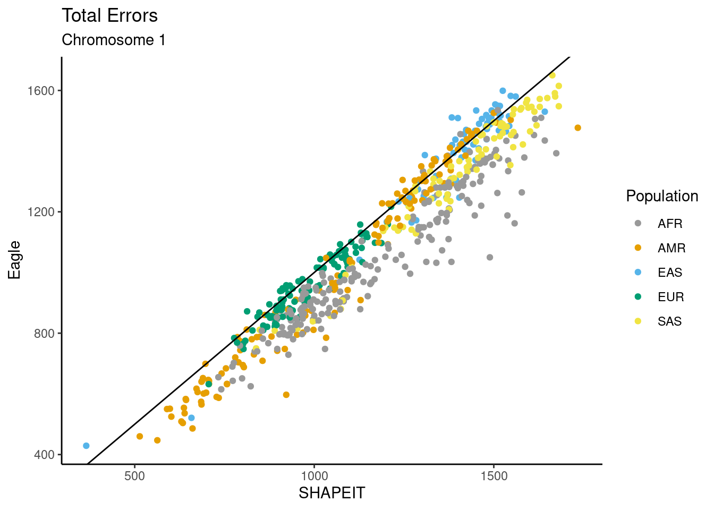
table_flip(df_switch_trio, "SUPER")| Characteristic | AFR, N = 2011 | AMR, N = 1371 | EAS, N = 721 | EUR, N = 1071 | SAS, N = 851 |
|---|---|---|---|---|---|
| b_l_e | |||||
| FALSE | 194 (97%) | 122 (89%) | 65 (90%) | 90 (84%) | 81 (95%) |
| TRUE | 7 (3.5%) | 15 (11%) | 7 (9.7%) | 17 (16%) | 4 (4.7%) |
| b_l_s | |||||
| FALSE | 11 (5.5%) | 14 (10%) | 8 (11%) | 19 (18%) | 3 (3.5%) |
| TRUE | 190 (95%) | 123 (90%) | 64 (89%) | 88 (82%) | 82 (96%) |
| e_l_b | |||||
| FALSE | 7 (3.5%) | 17 (12%) | 8 (11%) | 18 (17%) | 5 (5.9%) |
| TRUE | 194 (97%) | 120 (88%) | 64 (89%) | 89 (83%) | 80 (94%) |
| e_l_s | |||||
| FALSE | 0 (0%) | 5 (3.6%) | 0 (0%) | 3 (2.8%) | 0 (0%) |
| TRUE | 201 (100%) | 132 (96%) | 72 (100%) | 104 (97%) | 85 (100%) |
| s_l_b | |||||
| FALSE | 192 (96%) | 124 (91%) | 67 (93%) | 90 (84%) | 83 (98%) |
| TRUE | 9 (4.5%) | 13 (9.5%) | 5 (6.9%) | 17 (16%) | 2 (2.4%) |
| s_l_e | |||||
| FALSE | 201 (100%) | 133 (97%) | 72 (100%) | 105 (98%) | 85 (100%) |
| TRUE | 0 (0%) | 4 (2.9%) | 0 (0%) | 2 (1.9%) | 0 (0%) |
| 1 n (%) | |||||
cross_meth_plot(df_switch_trio, "Flips", plot_flips, "SUPER", "15")Warning in get_plot_component(plot, "guide-box"): Multiple components found;
returning the first one. To return all, use `return_all = TRUE`.
And now chromosome 22:
plot_flips(df_switch_trio_22, "Beagle", "Eagle", "SUPER", 22)
plot_flips(df_switch_trio_22, "Beagle", "SHAPEIT", "SUPER", 22)
plot_flips(df_switch_trio_22, "SHAPEIT", "Eagle", "SUPER", 22)
table_flip(df_switch_trio_22, "SUPER")| Characteristic | AFR, N = 2011 | AMR, N = 1371 | EAS, N = 721 | EUR, N = 1071 | SAS, N = 851 |
|---|---|---|---|---|---|
| b_l_e | |||||
| FALSE | 184 (92%) | 109 (80%) | 48 (67%) | 76 (71%) | 65 (76%) |
| TRUE | 17 (8.5%) | 28 (20%) | 24 (33%) | 31 (29%) | 20 (24%) |
| b_l_s | |||||
| FALSE | 27 (13%) | 21 (15%) | 15 (21%) | 18 (17%) | 17 (20%) |
| TRUE | 174 (87%) | 116 (85%) | 57 (79%) | 89 (83%) | 68 (80%) |
| e_l_b | |||||
| FALSE | 18 (9.0%) | 34 (25%) | 25 (35%) | 37 (35%) | 22 (26%) |
| TRUE | 183 (91%) | 103 (75%) | 47 (65%) | 70 (65%) | 63 (74%) |
| e_l_s | |||||
| FALSE | 2 (1.0%) | 18 (13%) | 5 (6.9%) | 12 (11%) | 3 (3.5%) |
| TRUE | 199 (99%) | 119 (87%) | 67 (93%) | 95 (89%) | 82 (96%) |
| s_l_b | |||||
| FALSE | 178 (89%) | 117 (85%) | 59 (82%) | 91 (85%) | 68 (80%) |
| TRUE | 23 (11%) | 20 (15%) | 13 (18%) | 16 (15%) | 17 (20%) |
| s_l_e | |||||
| FALSE | 199 (99%) | 124 (91%) | 67 (93%) | 96 (90%) | 82 (96%) |
| TRUE | 2 (1.0%) | 13 (9.5%) | 5 (6.9%) | 11 (10%) | 3 (3.5%) |
| 1 n (%) | |||||
cross_meth_plot(df_switch_trio_22, "Flips", plot_flips, "SUPER", "22")Warning in get_plot_component(plot, "guide-box"): Multiple components found;
returning the first one. To return all, use `return_all = TRUE`.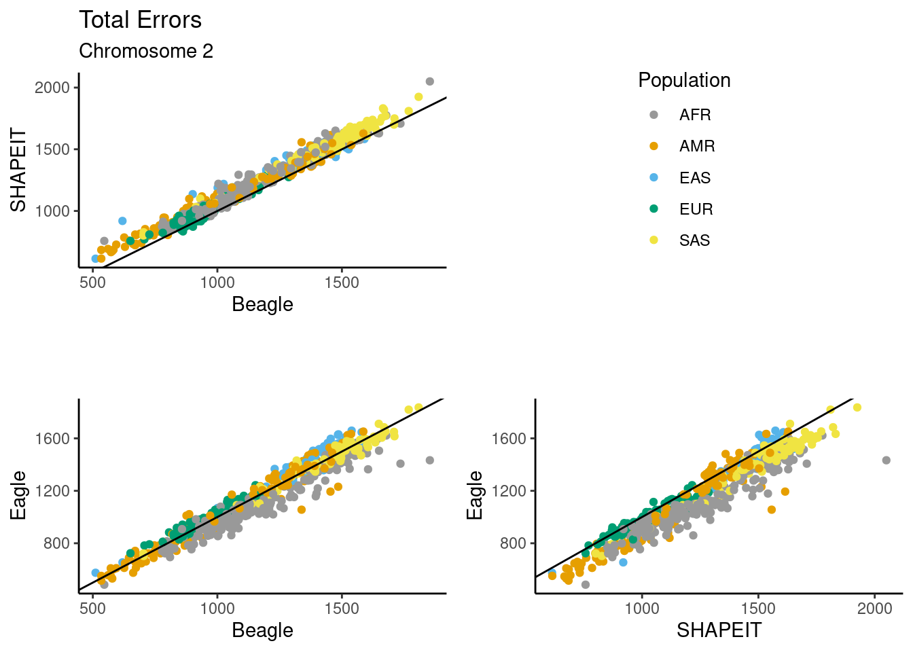
And finally, chromosome X:
plot_flips(df_switch_x, "Beagle", "Eagle", "pop", "X")
plot_flips(df_switch_x, "Beagle", "SHAPEIT", "pop", "X")
plot_flips(df_switch_x, "SHAPEIT", "Eagle", "pop", "X")
table_flip(df_switch_x, "pop")| Characteristic | AFR, N = 2001 | AMR, N = 2001 | EAS, N = 2001 | EUR, N = 2001 | SAS, N = 2001 |
|---|---|---|---|---|---|
| b_l_e | |||||
| FALSE | 120 (60%) | 107 (54%) | 115 (58%) | 112 (56%) | 94 (47%) |
| TRUE | 80 (40%) | 93 (47%) | 85 (43%) | 88 (44%) | 106 (53%) |
| b_l_s | |||||
| FALSE | 13 (6.5%) | 29 (15%) | 41 (21%) | 21 (11%) | 26 (13%) |
| TRUE | 187 (94%) | 171 (86%) | 159 (80%) | 179 (90%) | 174 (87%) |
| e_l_b | |||||
| FALSE | 86 (43%) | 105 (53%) | 93 (47%) | 95 (48%) | 114 (57%) |
| TRUE | 114 (57%) | 95 (48%) | 107 (54%) | 105 (53%) | 86 (43%) |
| e_l_s | |||||
| FALSE | 14 (7.0%) | 30 (15%) | 55 (28%) | 37 (19%) | 42 (21%) |
| TRUE | 186 (93%) | 170 (85%) | 145 (73%) | 163 (82%) | 158 (79%) |
| s_l_b | |||||
| FALSE | 191 (96%) | 174 (87%) | 163 (82%) | 180 (90%) | 177 (89%) |
| TRUE | 9 (4.5%) | 26 (13%) | 37 (19%) | 20 (10%) | 23 (12%) |
| s_l_e | |||||
| FALSE | 188 (94%) | 171 (86%) | 151 (76%) | 167 (84%) | 160 (80%) |
| TRUE | 12 (6.0%) | 29 (15%) | 49 (25%) | 33 (17%) | 40 (20%) |
| 1 n (%) | |||||
cross_meth_plot(df_switch_x, "Flips", plot_flips, "pop", "X")Warning in get_plot_component(plot, "guide-box"): Multiple components found;
returning the first one. To return all, use `return_all = TRUE`.Flip Rate
plot_flip_rate <- function(df, m1, m2, pop, chrom = 15){
p <- df %>%
mutate(Beagle = n_flip_beagle / n_hets,
Eagle = n_flip_eagle / n_hets,
SHAPEIT = n_flip_shapeit / n_hets) %>%
ggplot(aes(x = !! sym(m1), y = !! sym(m2), colour = !! sym(pop))) +
geom_point() +
geom_abline(slope = 1, intercept = 0) +
ggtitle("Flip rate", paste0("Chromosome ", chrom)) +
theme_classic() +
xlab(m1) +
ylab(m2) +
labs(color="Population") +
scale_color_manual(values = cbPalette)
return(p)
}
plot_flip_rate(df_switch_trio, "Beagle", "Eagle", "SUPER")
plot_flip_rate(df_switch_trio, "Beagle", "SHAPEIT", "SUPER")
plot_flip_rate(df_switch_trio, "SHAPEIT", "Eagle", "SUPER")
cross_meth_plot(df_switch_trio, "Flips", plot_flip_rate, "SUPER", "15")Warning in get_plot_component(plot, "guide-box"): Multiple components found;
returning the first one. To return all, use `return_all = TRUE`.
And now chromosome 22:
plot_flip_rate(df_switch_trio_22, "Beagle", "Eagle", "SUPER", 22)
plot_flip_rate(df_switch_trio_22, "Beagle", "SHAPEIT", "SUPER", 22)
plot_flip_rate(df_switch_trio_22, "SHAPEIT", "Eagle", "SUPER", 22)
cross_meth_plot(df_switch_trio_22, "Flips", plot_flip_rate, "SUPER", "22")Warning in get_plot_component(plot, "guide-box"): Multiple components found;
returning the first one. To return all, use `return_all = TRUE`.
And finally, chromosome X:
plot_flip_rate(df_switch_x, "Beagle", "Eagle", "pop", "X")
| Version | Author | Date |
|---|---|---|
| 17d41d5 | Andy Beck | 2024-05-22 |
plot_flip_rate(df_switch_x, "Beagle", "SHAPEIT", "pop", "X")
| Version | Author | Date |
|---|---|---|
| 17d41d5 | Andy Beck | 2024-05-22 |
plot_flip_rate(df_switch_x, "SHAPEIT", "Eagle", "pop", "X")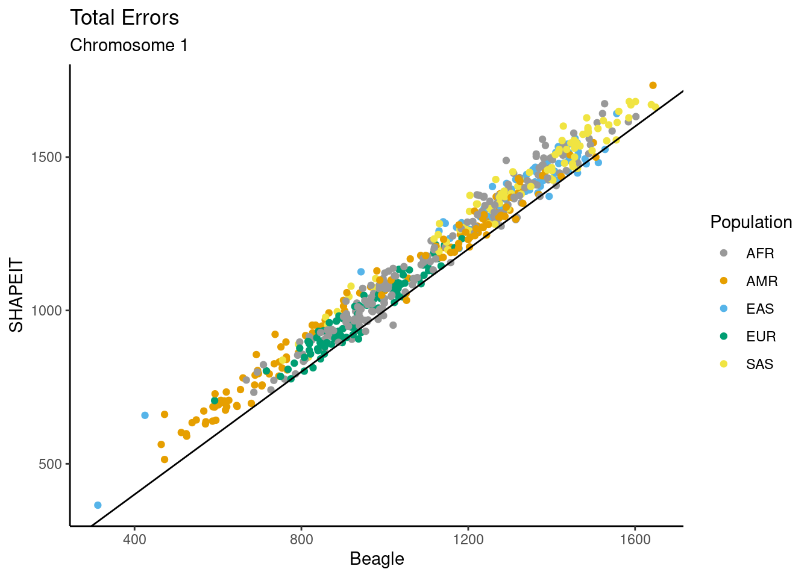
| Version | Author | Date |
|---|---|---|
| 17d41d5 | Andy Beck | 2024-05-22 |
cross_meth_plot(df_switch_x, "Flips", plot_flip_rate, "pop", "X")Warning in get_plot_component(plot, "guide-box"): Multiple components found;
returning the first one. To return all, use `return_all = TRUE`.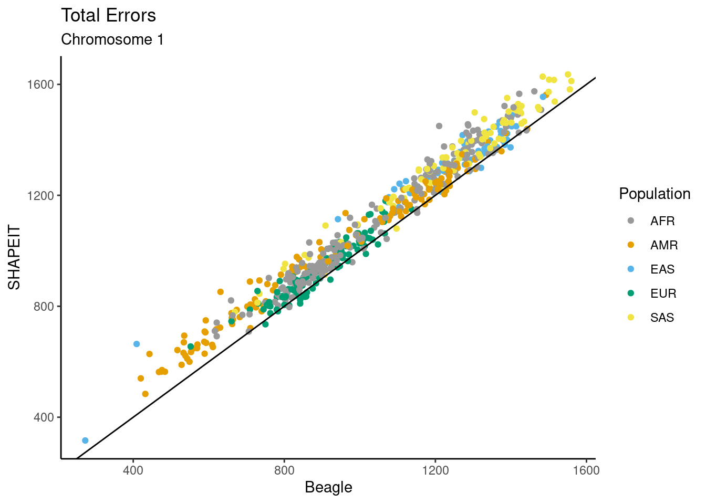
Comparisons of Average Rates Across Chromosomes
df_switch_trio %>%
mutate(Beagle = n_other_beagle / n_hets,
Eagle = n_other_eagle / n_hets,
SHAPEIT = n_other_shapeit / n_hets ) %>%
group_by(SUPER) %>%
summarize(Beagle15 = mean(Beagle),
Eagle15 = mean(Eagle),
SHAPEIT15 = mean(SHAPEIT)) %>%
left_join({
df_switch_x %>%
mutate(Beagle = n_other_beagle / n_hets,
Eagle = n_other_eagle / n_hets,
SHAPEIT = n_other_shapeit / n_hets ) %>%
group_by(pop) %>%
summarize(BeagleX = mean(Beagle),
EagleX = mean(Eagle),
SHAPEITX = mean(SHAPEIT))
}, by = c("SUPER" = "pop")) %>%
left_join({
df_switch_trio_22 %>%
mutate(Beagle = n_other_beagle / n_hets,
Eagle = n_other_eagle / n_hets,
SHAPEIT = n_other_shapeit / n_hets) %>%
group_by(SUPER) %>%
summarize(Beagle22 = mean(Beagle),
Eagle22 = mean(Eagle),
SHAPEIT22 = mean(SHAPEIT))
}, by="SUPER") %>%
knitr::kable()| SUPER | Beagle15 | Eagle15 | SHAPEIT15 | BeagleX | EagleX | SHAPEITX | Beagle22 | Eagle22 | SHAPEIT22 |
|---|---|---|---|---|---|---|---|---|---|
| AFR | 0.0020990 | 0.0026221 | 0.0019901 | 0.0008880 | 0.0013558 | 0.0007707 | 0.0031591 | 0.0037957 | 0.0029395 |
| AMR | 0.0023207 | 0.0029179 | 0.0023020 | 0.0012206 | 0.0016760 | 0.0011439 | 0.0034680 | 0.0041346 | 0.0033479 |
| EAS | 0.0039176 | 0.0048357 | 0.0038838 | 0.0028352 | 0.0036614 | 0.0026536 | 0.0051743 | 0.0061074 | 0.0050655 |
| EUR | 0.0024982 | 0.0030235 | 0.0024090 | 0.0015108 | 0.0020636 | 0.0013951 | 0.0035231 | 0.0040631 | 0.0033597 |
| SAS | 0.0033861 | 0.0041352 | 0.0033395 | 0.0020451 | 0.0026914 | 0.0018639 | 0.0044818 | 0.0052986 | 0.0043844 |
df_switch_trio %>%
mutate(Beagle = n_other_beagle / n_hets,
Eagle = n_other_eagle / n_hets,
SHAPEIT = n_other_shapeit / n_hets ) %>%
group_by(SUPER) %>%
summarize(Beagle15 = mean(Beagle),
Eagle15 = mean(Eagle),
SHAPEIT15 = mean(SHAPEIT)) %>%
left_join({
df_switch_x %>%
mutate(Beagle = n_other_beagle / n_hets,
Eagle = n_other_eagle / n_hets,
SHAPEIT = n_other_shapeit / n_hets ) %>%
group_by(pop) %>%
summarize(BeagleX = mean(Beagle),
EagleX = mean(Eagle),
SHAPEITX = mean(SHAPEIT))
}, by = c("SUPER" = "pop")) %>%
left_join({
df_switch_trio_22 %>%
mutate(Beagle = n_other_beagle / n_hets,
Eagle = n_other_eagle / n_hets,
SHAPEIT = n_other_shapeit / n_hets) %>%
group_by(SUPER) %>%
summarize(Beagle22 = mean(Beagle),
Eagle22 = mean(Eagle),
SHAPEIT22 = mean(SHAPEIT))
}, by="SUPER") %>%
mutate(BeagleX = Beagle15 / BeagleX,
EagleX = Eagle15 / EagleX,
SHAPEITX = SHAPEIT15 / SHAPEITX,
Beagle22 = Beagle15 / Beagle22,
Eagle22 = Eagle15 / Eagle22,
SHAPEIT22 = SHAPEIT15 / SHAPEIT22) %>%
select(SUPER, BeagleX, EagleX, SHAPEITX, Beagle22, Eagle22, SHAPEIT22) %>%
knitr::kable()| SUPER | BeagleX | EagleX | SHAPEITX | Beagle22 | Eagle22 | SHAPEIT22 |
|---|---|---|---|---|---|---|
| AFR | 2.363750 | 1.934005 | 2.582241 | 0.6644303 | 0.6908147 | 0.6770152 |
| AMR | 1.901232 | 1.740973 | 2.012420 | 0.6691692 | 0.7057198 | 0.6876123 |
| EAS | 1.381779 | 1.320731 | 1.463601 | 0.7571296 | 0.7917750 | 0.7667151 |
| EUR | 1.653486 | 1.465200 | 1.726761 | 0.7090876 | 0.7441351 | 0.7170066 |
| SAS | 1.655670 | 1.536443 | 1.791711 | 0.7555182 | 0.7804361 | 0.7616811 |
df_switch_trio %>%
mutate(Beagle = n_other_beagle / n_hets,
Eagle = n_other_eagle / n_hets,
SHAPEIT = n_other_shapeit / n_hets ) %>%
group_by(SUPER) %>%
summarize(Beagle15 = mean(Beagle),
Eagle15 = mean(Eagle),
SHAPEIT15 = mean(SHAPEIT)) %>%
left_join({
df_switch_x %>%
mutate(Beagle = n_other_beagle / n_hets,
Eagle = n_other_eagle / n_hets,
SHAPEIT = n_other_shapeit / n_hets ) %>%
group_by(pop) %>%
summarize(BeagleX = mean(Beagle),
EagleX = mean(Eagle),
SHAPEITX = mean(SHAPEIT))
}, by = c("SUPER" = "pop")) %>%
left_join({
df_switch_trio_22 %>%
mutate(Beagle = n_other_beagle / n_hets,
Eagle = n_other_eagle / n_hets,
SHAPEIT = n_other_shapeit / n_hets) %>%
group_by(SUPER) %>%
summarize(Beagle22 = mean(Beagle),
Eagle22 = mean(Eagle),
SHAPEIT22 = mean(SHAPEIT))
}, by="SUPER") %>%
mutate(BeagleX = BeagleX / Beagle15,
EagleX = EagleX / Eagle15,
SHAPEITX = SHAPEITX / SHAPEIT15,
Beagle22 = Beagle22 / Beagle15,
Eagle22 = Eagle22 / Eagle15,
SHAPEIT22 = SHAPEIT22 / SHAPEIT15) %>%
select(SUPER, BeagleX, EagleX, SHAPEITX, Beagle22, Eagle22, SHAPEIT22) %>%
knitr::kable()| SUPER | BeagleX | EagleX | SHAPEITX | Beagle22 | Eagle22 | SHAPEIT22 |
|---|---|---|---|---|---|---|
| AFR | 0.4230566 | 0.5170618 | 0.3872606 | 1.505049 | 1.447566 | 1.477072 |
| AMR | 0.5259747 | 0.5743914 | 0.4969142 | 1.494390 | 1.416993 | 1.454308 |
| EAS | 0.7237048 | 0.7571563 | 0.6832465 | 1.320778 | 1.262985 | 1.304266 |
| EUR | 0.6047829 | 0.6825009 | 0.5791190 | 1.410263 | 1.343842 | 1.394687 |
| SAS | 0.6039851 | 0.6508539 | 0.5581256 | 1.323595 | 1.281335 | 1.312885 |
Error rates and triple het rate
Using only trio sequencing data, the phase of sites which are heterozygous in both the parents and in the child cannot be determined by the principles of Mendelian segregation. Below we explore the assocition between the frequency of triple heterozygous sites in each trio and the rate of errors in phasing of the child.
Switch rate
Beagle
plot_th_sr <- function(df, m1, chrom = 15){
df <- df %>%
mutate(Beagle = n_other_beagle / n_hets,
Eagle = n_other_eagle / n_hets,
SHAPEIT = n_other_shapeit / n_hets,
frac_t_het = n_t_het / n_hets)
c_val <- signif(cor(df[m1], df["frac_t_het"]), 4)
c_obj <- cor.test(df[[m1]], df[["frac_t_het"]])
p_val <- paste0("p=",signif(c_obj$p.value, 4))
p <- df %>%
ggplot(aes(x = frac_t_het, y = !! sym(m1), color = SUPER)) +
geom_point() +
xlab("Fraction of sites triple heterozygous") +
ylab("Switch Error Rate") +
scale_color_manual(values = cbPalette) +
labs(color="Population") +
ggtitle("Switch error rates and triple heterozygotes", paste0("Chromosome ", chrom, "; corr = ", c_val, "(", p_val ,")"))
return(p)
}
plot_th_sr(df_switch_trio, "Beagle")
| Version | Author | Date |
|---|---|---|
| 17d41d5 | Andy Beck | 2024-05-22 |


Flip Rate
Beagle
plot_th_fr <- function(df, m1, chrom = 15){
df <- df %>%
mutate(Beagle = n_flip_beagle / n_hets,
Eagle = n_flip_eagle / n_hets,
SHAPEIT = n_flip_shapeit / n_hets,
frac_t_het = n_t_het / n_hets)
c_val <- signif(cor(df[m1], df["frac_t_het"]), 4)
c_obj <- cor.test(df[[m1]], df[["frac_t_het"]])
p_val <- paste0("p=",signif(c_obj$p.value, 4))
p <- df %>%
ggplot(aes(x = frac_t_het, y = !! sym(m1), color = SUPER)) +
geom_point() +
xlab("Fraction of sites triple heterozygous") +
ylab("Flip Error Rate") +
scale_color_manual(values = cbPalette) +
labs(color="Population") +
ggtitle("Flip error rates and triple heterozygotes", paste0("Chromosome ", chrom, "; corr = ", c_val, "(", p_val ,")"))
return(p)
}
plot_th_fr(df_switch_trio, "Beagle")
| Version | Author | Date |
|---|---|---|
| 17d41d5 | Andy Beck | 2024-05-22 |
Enrichment at CpG
df_switch_trio %>%
summarize(mean_switch_eagle = mean(n_other_cpg_eagle),
mean_switch_beagle = mean(n_other_cpg_beagle),
mean_switch_shapeit = mean(n_other_cpg_shapeit),
mean_flip_eagle = mean(n_flip_cpg_eagle),
mean_flip_beagle = mean(n_flip_cpg_beagle),
mean_flip_shapeit = mean(n_flip_cpg_shapeit)) %>%
knitr::kable()| mean_switch_eagle | mean_switch_beagle | mean_switch_shapeit | mean_flip_eagle | mean_flip_beagle | mean_flip_shapeit |
|---|---|---|---|---|---|
| 39.91362 | 29.92359 | 28.56478 | 59.77409 | 66.18272 | 73.09967 |
df_switch_trio %>%
group_by(SUPER) %>%
summarize(mean_switch_eagle = mean(n_other_cpg_eagle),
mean_switch_beagle = mean(n_other_cpg_beagle),
mean_switch_shapeit = mean(n_other_cpg_shapeit),
mean_flip_eagle = mean(n_flip_cpg_eagle),
mean_flip_beagle = mean(n_flip_cpg_beagle),
mean_flip_shapeit = mean(n_flip_cpg_shapeit)) %>%
knitr::kable()| SUPER | mean_switch_eagle | mean_switch_beagle | mean_switch_shapeit | mean_flip_eagle | mean_flip_beagle | mean_flip_shapeit |
|---|---|---|---|---|---|---|
| AFR | 41.41791 | 30.31343 | 27.90050 | 62.72139 | 72.44279 | 80.55224 |
| AMR | 32.91971 | 23.98540 | 24.06569 | 52.51825 | 57.26277 | 63.90511 |
| EAS | 50.12500 | 38.11111 | 36.77778 | 66.76389 | 71.04167 | 77.79167 |
| EUR | 32.86916 | 25.81308 | 24.44860 | 50.81308 | 54.93458 | 59.54206 |
| SAS | 47.84706 | 36.81176 | 35.61176 | 69.85882 | 75.80000 | 83.38824 |
df_switch_trio %>%
summarize(mean_switch_eagle = mean(n_other_cpg_eagle / n_other_eagle),
mean_switch_beagle = mean(n_other_cpg_beagle / n_other_beagle),
mean_switch_shapeit = mean(n_other_cpg_shapeit / n_other_shapeit),
mean_flip_eagle = mean(n_flip_cpg_eagle / n_flip_eagle),
mean_flip_beagle = mean(n_flip_cpg_beagle / n_flip_beagle),
mean_flip_shapeit = mean(n_flip_cpg_shapeit / n_flip_shapeit)) %>%
knitr::kable()| mean_switch_eagle | mean_switch_beagle | mean_switch_shapeit | mean_flip_eagle | mean_flip_beagle | mean_flip_shapeit |
|---|---|---|---|---|---|
| 0.2001285 | 0.1858234 | 0.1830022 | 0.1964447 | 0.1930989 | 0.1962629 |
df_switch_trio %>%
summarize(mean_switch_eagle = mean((n_other_cpg_eagle / n_other_eagle) / ( n_het_cpg / n_hets)),
mean_switch_beagle = mean((n_other_cpg_beagle / n_other_beagle) / ( n_het_cpg / n_hets)),
mean_switch_shapeit = mean((n_other_cpg_shapeit / n_other_shapeit) / ( n_het_cpg / n_hets) ),
mean_flip_eagle = mean((n_flip_cpg_eagle / n_flip_eagle) / ( n_het_cpg / n_hets)),
mean_flip_beagle = mean((n_flip_cpg_beagle / n_flip_beagle) / ( n_het_cpg / n_hets)),
mean_flip_shapeit = mean((n_flip_cpg_shapeit / n_flip_shapeit) / ( n_het_cpg / n_hets))) %>%
knitr::kable()| mean_switch_eagle | mean_switch_beagle | mean_switch_shapeit | mean_flip_eagle | mean_flip_beagle | mean_flip_shapeit |
|---|---|---|---|---|---|
| 1.218459 | 1.131366 | 1.114399 | 1.195993 | 1.175695 | 1.194962 |
df_switch_trio %>%
mutate( prop_cpg_beagle = n_other_cpg_beagle / n_other_beagle,
prop_cpg_eagle = n_other_cpg_eagle / n_other_eagle,
prop_cpg_shapeit = n_other_cpg_shapeit / n_other_shapeit) %>%
mutate(ods_beagle = prop_cpg_beagle / (1 - prop_cpg_beagle),
ods_eagle = prop_cpg_eagle / (1 - prop_cpg_eagle),
ods_shapeit = prop_cpg_shapeit / (1 - prop_cpg_shapeit),
ods_het = ( n_het_cpg / n_hets) / (1 - ( n_het_cpg / n_hets))) %>%
mutate(Beagle = ods_beagle / ods_het,
Eagle = ods_eagle / ods_het,
SHAPEIT = ods_shapeit / ods_het) %>%
select(SUPER, Beagle, Eagle, SHAPEIT) %>%
pivot_longer(-SUPER, names_to = "Method", values_to = "OR") %>%
ggplot(aes(x = Method, y = OR, colour = SUPER)) +
geom_boxplot() +
ylab("Odds CpG Switch / Odds CpG Het") +
ggtitle("Odds Ratio of CpG Status for Switches") +
theme_classic() +
labs(colour = "Population") +
scale_color_manual(values = cbPalette) +
geom_hline(yintercept = 1, linetype=2)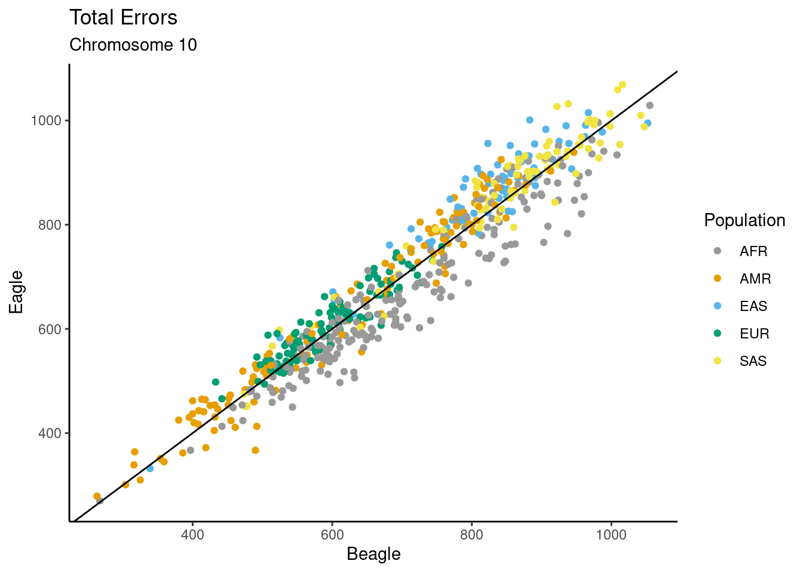
df_switch_trio %>%
mutate( prop_cpg_beagle = n_other_cpg_beagle / n_other_beagle,
prop_cpg_eagle = n_other_cpg_eagle / n_other_eagle,
prop_cpg_shapeit = n_other_cpg_shapeit / n_other_shapeit) %>%
mutate(ods_beagle = prop_cpg_beagle / (1 - prop_cpg_beagle),
ods_eagle = prop_cpg_eagle / (1 - prop_cpg_eagle),
ods_shapeit = prop_cpg_shapeit / (1 - prop_cpg_shapeit),
ods_het = ( n_het_cpg / n_hets) / (1 - ( n_het_cpg / n_hets))) %>%
mutate(Beagle = ods_beagle / ods_het,
Eagle = ods_eagle / ods_het,
SHAPEIT = ods_shapeit / ods_het) %>%
select(SUPER, Beagle, Eagle, SHAPEIT) %>%
pivot_longer(-SUPER, names_to = "Method", values_to = "OR") %>%
ggplot(aes(x = Method, y = OR)) +
geom_boxplot() +
ylab("Odds CpG Switch / Odds CpG Het") +
ggtitle("Odds Ratio of CpG Status for Switches") +
theme_classic() +
scale_color_manual(values = cbPalette) +
geom_hline(yintercept = 1, linetype=2)
And flips:
df_switch_trio %>%
mutate( prop_cpg_beagle = n_flip_cpg_beagle / n_flip_beagle,
prop_cpg_eagle = n_flip_cpg_eagle / n_flip_eagle,
prop_cpg_shapeit = n_flip_cpg_shapeit / n_flip_shapeit) %>%
mutate(ods_beagle = prop_cpg_beagle / (1 - prop_cpg_beagle),
ods_eagle = prop_cpg_eagle / (1 - prop_cpg_eagle),
ods_shapeit = prop_cpg_shapeit / (1 - prop_cpg_shapeit),
ods_het = ( n_het_cpg / n_hets) / (1 - ( n_het_cpg / n_hets))) %>%
mutate(Beagle = ods_beagle / ods_het,
Eagle = ods_eagle / ods_het,
SHAPEIT = ods_shapeit / ods_het) %>%
select(SUPER, Beagle, Eagle, SHAPEIT) %>%
pivot_longer(-SUPER, names_to = "Method", values_to = "OR") %>%
ggplot(aes(x = Method, y = OR, colour = SUPER)) +
geom_boxplot() +
ylab("Odds CpG Switch / Odds CpG Het") +
ggtitle("Odds Ratio of CpG Status for Switches") +
theme_classic() +
labs(colour = "Population") +
scale_color_manual(values = cbPalette) +
geom_hline(yintercept = 1, linetype=2)
df_switch_trio %>%
mutate( prop_cpg_beagle = n_flip_cpg_beagle / n_flip_beagle,
prop_cpg_eagle = n_flip_cpg_eagle / n_flip_eagle,
prop_cpg_shapeit = n_flip_cpg_shapeit / n_flip_shapeit) %>%
mutate(ods_beagle = prop_cpg_beagle / (1 - prop_cpg_beagle),
ods_eagle = prop_cpg_eagle / (1 - prop_cpg_eagle),
ods_shapeit = prop_cpg_shapeit / (1 - prop_cpg_shapeit),
ods_het = ( n_het_cpg / n_hets) / (1 - ( n_het_cpg / n_hets))) %>%
mutate(Beagle = ods_beagle / ods_het,
Eagle = ods_eagle / ods_het,
SHAPEIT = ods_shapeit / ods_het) %>%
select(SUPER, Beagle, Eagle, SHAPEIT) %>%
pivot_longer(-SUPER, names_to = "Method", values_to = "OR") %>%
ggplot(aes(x = Method, y = OR)) +
geom_boxplot() +
ylab("Odds CpG Switch / Odds CpG Het") +
ggtitle("Odds Ratio of CpG Status for Switches") +
theme_classic() +
scale_color_manual(values = cbPalette) +
geom_hline(yintercept = 1, linetype=2)
MAF Bins
In the maf_prop_df data frame, we have for each
synthetic diploid the proportion of heterozygous sites that are: rare
variants (maf < 0.01); uncommon variants (0.01 < maf < 0.05);
and common variants (maf > 0.05). We also have these proportions for
each type of error for each method (switch; flip start; flip end;
correct).
Let’s first look at the distributions of these proportions for all heterozygous positions within each individual:
prop_maf_fig <- function(cat_type, title_text){
df <- maf_prop_df %>%
filter(str_detect(category, paste0("^", cat_type, "_[rcu]"))) %>%
mutate(category = factor(category)) %>%
mutate(category = fct_recode(category, "Rare" = paste0(cat_type, "_rare"),
"Uncommon" = paste0(cat_type, "_uncommon"),
"Common" = paste0(cat_type, "_common"))) %>%
mutate(category = fct_relevel(category, c("Rare", "Uncommon", "Common")))
p <- df %>%
ggplot(aes(x = category, y = proportion, color = SUPER)) +
geom_boxplot() +
ggtitle(paste0(title_text, " in MAF Bins")) +
xlab("") +
ylab("Proportion of Sites") +
theme_classic() +
labs(color = "Population") +
scale_color_manual(values = cbPalette)
tab_prop <- df %>%
group_by(SUPER, category) %>%
summarize(mean_prop = mean(proportion))
return(list(p = p, tab_prop = tab_prop))
}
res_obj <- prop_maf_fig("het", "Heterozygous Sites")`summarise()` has grouped output by 'SUPER'. You can override using the
`.groups` argument.print(res_obj$p)
res_obj$tab_prop %>%
knitr::kable()| SUPER | category | mean_prop |
|---|---|---|
| AFR | Rare | 0.0911487 |
| AFR | Uncommon | 0.1887811 |
| AFR | Common | 0.7200702 |
| AMR | Rare | 0.0416627 |
| AMR | Uncommon | 0.0644495 |
| AMR | Common | 0.8938878 |
| EAS | Rare | 0.0506423 |
| EAS | Uncommon | 0.0445416 |
| EAS | Common | 0.9048161 |
| EUR | Rare | 0.0407045 |
| EUR | Uncommon | 0.0528419 |
| EUR | Common | 0.9064535 |
| SAS | Rare | 0.0496801 |
| SAS | Uncommon | 0.0467739 |
| SAS | Common | 0.9035461 |
Beagle Errors
Switches
cat_type <- "beagle_switch"
title_text <- "Beagle Switches"
res_obj <- prop_maf_fig(cat_type, title_text)`summarise()` has grouped output by 'SUPER'. You can override using the
`.groups` argument.print(res_obj$p)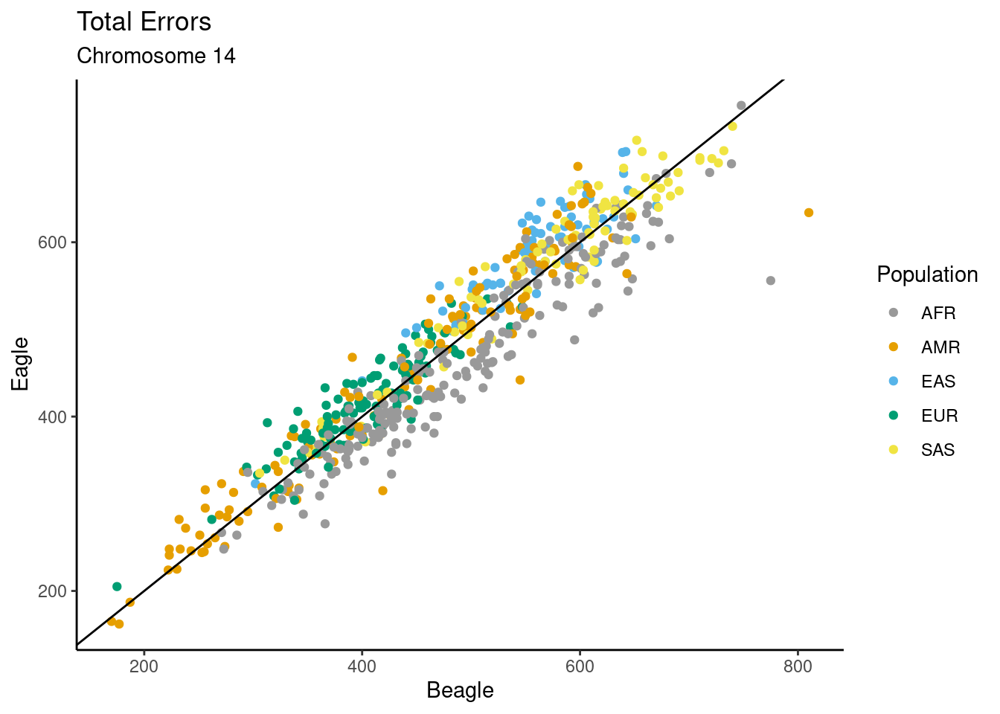
res_obj$tab_prop %>%
knitr::kable()| SUPER | category | mean_prop |
|---|---|---|
| AFR | Rare | 0.1861816 |
| AFR | Uncommon | 0.1968495 |
| AFR | Common | 0.6169689 |
| AMR | Rare | 0.2080965 |
| AMR | Uncommon | 0.1085269 |
| AMR | Common | 0.6833767 |
| EAS | Rare | 0.2353436 |
| EAS | Uncommon | 0.0685826 |
| EAS | Common | 0.6960738 |
| EUR | Rare | 0.1903093 |
| EUR | Uncommon | 0.0951006 |
| EUR | Common | 0.7145901 |
| SAS | Rare | 0.2199657 |
| SAS | Uncommon | 0.0656904 |
| SAS | Common | 0.7143439 |
Flips
Start
cat_type <- "beagle_flip"
title_text <- "Beagle Flips"
res_obj <- prop_maf_fig(cat_type, title_text)`summarise()` has grouped output by 'SUPER'. You can override using the
`.groups` argument.print(res_obj$p)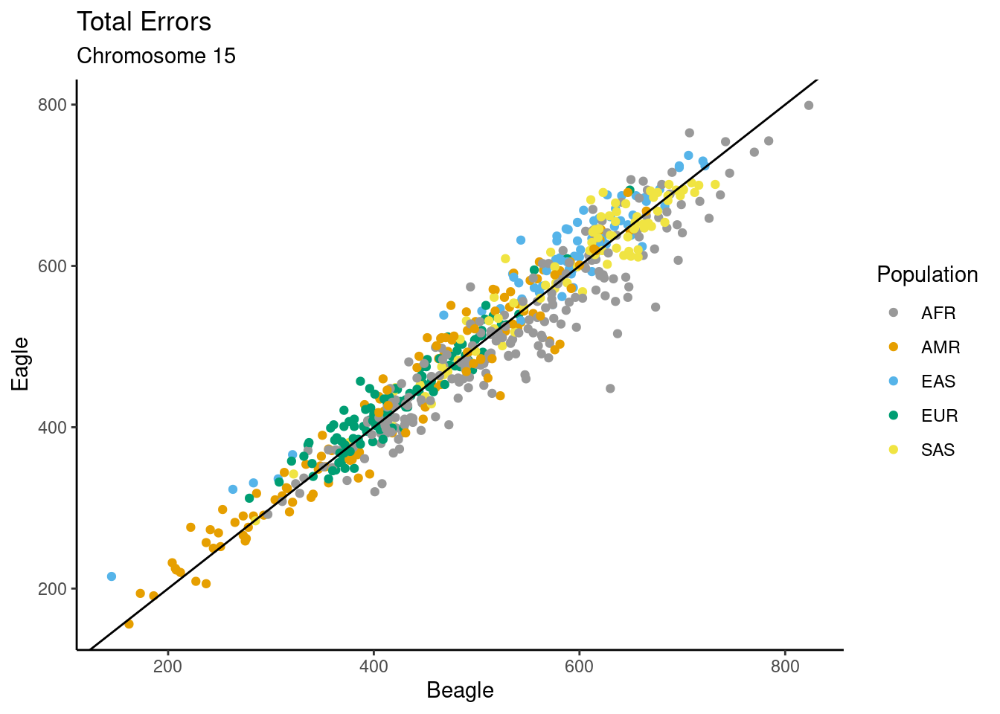
res_obj$tab_prop %>%
knitr::kable()| SUPER | category | mean_prop |
|---|---|---|
| AFR | Rare | 0.7746888 |
| AFR | Uncommon | 0.0568014 |
| AFR | Common | 0.1685099 |
| AMR | Rare | 0.8164452 |
| AMR | Uncommon | 0.0334880 |
| AMR | Common | 0.1500668 |
| EAS | Rare | 0.8226285 |
| EAS | Uncommon | 0.0238369 |
| EAS | Common | 0.1535346 |
| EUR | Rare | 0.7960008 |
| EUR | Uncommon | 0.0273843 |
| EUR | Common | 0.1766149 |
| SAS | Rare | 0.8075328 |
| SAS | Uncommon | 0.0218194 |
| SAS | Common | 0.1706479 |
End
cat_type <- "beagle_flip end"
title_text <- "Beagle Flip Ends"
res_obj <- prop_maf_fig(cat_type, title_text)`summarise()` has grouped output by 'SUPER'. You can override using the
`.groups` argument.print(res_obj$p)
res_obj$tab_prop %>%
knitr::kable()| SUPER | category | mean_prop |
|---|---|---|
| AFR | Rare | 0.1577653 |
| AFR | Uncommon | 0.2173428 |
| AFR | Common | 0.6248919 |
| AMR | Rare | 0.1425424 |
| AMR | Uncommon | 0.1206680 |
| AMR | Common | 0.7367897 |
| EAS | Rare | 0.1929644 |
| EAS | Uncommon | 0.0773941 |
| EAS | Common | 0.7296415 |
| EUR | Rare | 0.1568062 |
| EUR | Uncommon | 0.1150621 |
| EUR | Common | 0.7281317 |
| SAS | Rare | 0.1682304 |
| SAS | Uncommon | 0.0741995 |
| SAS | Common | 0.7575701 |
Eagle Errors
Switches
cat_type <- "eagle_switch"
title_text <- "Eagle Switches"
res_obj <- prop_maf_fig(cat_type, title_text)`summarise()` has grouped output by 'SUPER'. You can override using the
`.groups` argument.print(res_obj$p)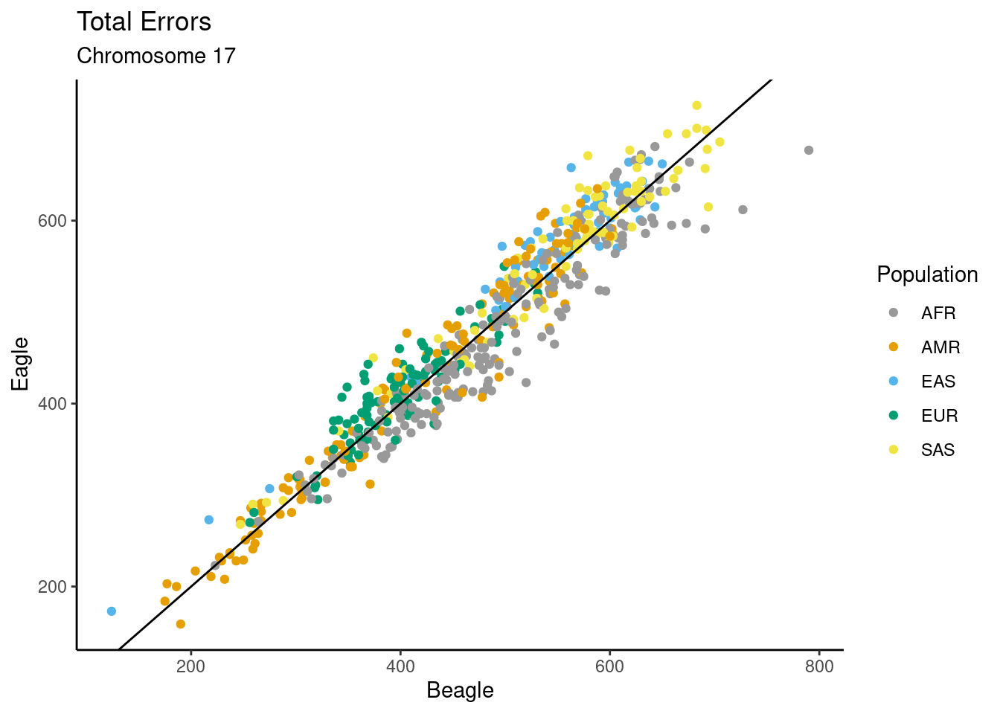
res_obj$tab_prop %>%
knitr::kable()| SUPER | category | mean_prop |
|---|---|---|
| AFR | Rare | 0.2393168 |
| AFR | Uncommon | 0.1897947 |
| AFR | Common | 0.5708886 |
| AMR | Rare | 0.2576974 |
| AMR | Uncommon | 0.1018827 |
| AMR | Common | 0.6404199 |
| EAS | Rare | 0.2718612 |
| EAS | Uncommon | 0.0672702 |
| EAS | Common | 0.6608686 |
| EUR | Rare | 0.2323533 |
| EUR | Uncommon | 0.0927154 |
| EUR | Common | 0.6749313 |
| SAS | Rare | 0.2695905 |
| SAS | Uncommon | 0.0636908 |
| SAS | Common | 0.6667187 |
Flips
Start
cat_type <- "eagle_flip"
title_text <- "Eagle Flips"
res_obj <- prop_maf_fig(cat_type, title_text)`summarise()` has grouped output by 'SUPER'. You can override using the
`.groups` argument.print(res_obj$p)
res_obj$tab_prop %>%
knitr::kable()| SUPER | category | mean_prop |
|---|---|---|
| AFR | Rare | 0.7007774 |
| AFR | Uncommon | 0.0743881 |
| AFR | Common | 0.2248345 |
| AMR | Rare | 0.7702335 |
| AMR | Uncommon | 0.0399831 |
| AMR | Common | 0.1897834 |
| EAS | Rare | 0.7819731 |
| EAS | Uncommon | 0.0276195 |
| EAS | Common | 0.1904074 |
| EUR | Rare | 0.7636334 |
| EUR | Uncommon | 0.0303916 |
| EUR | Common | 0.2059750 |
| SAS | Rare | 0.7752033 |
| SAS | Uncommon | 0.0257629 |
| SAS | Common | 0.1990338 |
End
cat_type <- "eagle_flip end"
title_text <- "Eagle Flip Ends"
res_obj <- prop_maf_fig(cat_type, title_text)`summarise()` has grouped output by 'SUPER'. You can override using the
`.groups` argument.print(res_obj$p)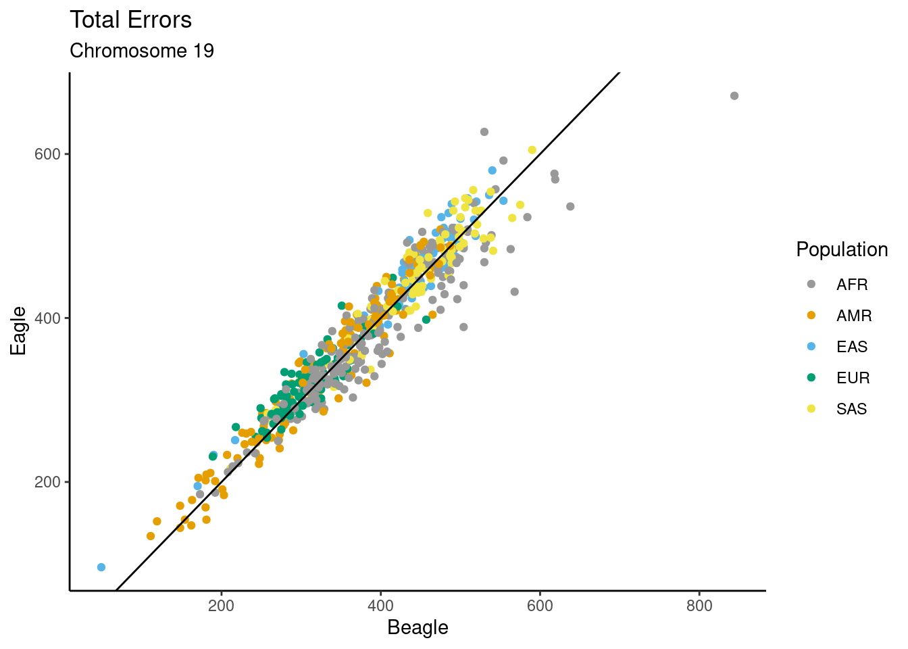
res_obj$tab_prop %>%
knitr::kable()| SUPER | category | mean_prop |
|---|---|---|
| AFR | Rare | 0.1469236 |
| AFR | Uncommon | 0.2152061 |
| AFR | Common | 0.6378704 |
| AMR | Rare | 0.1267323 |
| AMR | Uncommon | 0.1177484 |
| AMR | Common | 0.7555192 |
| EAS | Rare | 0.1756803 |
| EAS | Uncommon | 0.0744618 |
| EAS | Common | 0.7498579 |
| EUR | Rare | 0.1452658 |
| EUR | Uncommon | 0.1093052 |
| EUR | Common | 0.7454289 |
| SAS | Rare | 0.1515304 |
| SAS | Uncommon | 0.0722684 |
| SAS | Common | 0.7762012 |
SHAPEIT Errors
Switches
cat_type <- "shapeit_switch"
title_text <- "SHAPEIT Switches"
res_obj <- prop_maf_fig(cat_type, title_text)`summarise()` has grouped output by 'SUPER'. You can override using the
`.groups` argument.print(res_obj$p)
res_obj$tab_prop %>%
knitr::kable()| SUPER | category | mean_prop |
|---|---|---|
| AFR | Rare | 0.1964939 |
| AFR | Uncommon | 0.1911659 |
| AFR | Common | 0.6123402 |
| AMR | Rare | 0.2209119 |
| AMR | Uncommon | 0.1071165 |
| AMR | Common | 0.6719715 |
| EAS | Rare | 0.2438019 |
| EAS | Uncommon | 0.0665161 |
| EAS | Common | 0.6896819 |
| EUR | Rare | 0.1919166 |
| EUR | Uncommon | 0.0922758 |
| EUR | Common | 0.7158076 |
| SAS | Rare | 0.2353663 |
| SAS | Uncommon | 0.0648991 |
| SAS | Common | 0.6997346 |
Flips
Start
cat_type <- "shapeit_flip"
title_text <- "SHAPEIT Flips"
res_obj <- prop_maf_fig(cat_type, title_text)`summarise()` has grouped output by 'SUPER'. You can override using the
`.groups` argument.print(res_obj$p)
| Version | Author | Date |
|---|---|---|
| 9a4bd3e | Andy Beck | 2024-05-29 |
res_obj$tab_prop %>%
knitr::kable()| SUPER | category | mean_prop |
|---|---|---|
| AFR | Rare | 0.7678290 |
| AFR | Uncommon | 0.0586530 |
| AFR | Common | 0.1735179 |
| AMR | Rare | 0.8161006 |
| AMR | Uncommon | 0.0334402 |
| AMR | Common | 0.1504591 |
| EAS | Rare | 0.8115285 |
| EAS | Uncommon | 0.0243596 |
| EAS | Common | 0.1641119 |
| EUR | Rare | 0.7857868 |
| EUR | Uncommon | 0.0280658 |
| EUR | Common | 0.1861474 |
| SAS | Rare | 0.8022584 |
| SAS | Uncommon | 0.0210539 |
| SAS | Common | 0.1766877 |
End
cat_type <- "shapeit_flip end"
title_text <- "SHAPEIT Flip Ends"
res_obj <- prop_maf_fig(cat_type, title_text)`summarise()` has grouped output by 'SUPER'. You can override using the
`.groups` argument.print(res_obj$p)
| Version | Author | Date |
|---|---|---|
| 9a4bd3e | Andy Beck | 2024-05-29 |
res_obj$tab_prop %>%
knitr::kable()| SUPER | category | mean_prop |
|---|---|---|
| AFR | Rare | 0.1587097 |
| AFR | Uncommon | 0.2148009 |
| AFR | Common | 0.6264893 |
| AMR | Rare | 0.1426588 |
| AMR | Uncommon | 0.1210553 |
| AMR | Common | 0.7362859 |
| EAS | Rare | 0.1888239 |
| EAS | Uncommon | 0.0825999 |
| EAS | Common | 0.7285762 |
| EUR | Rare | 0.1554461 |
| EUR | Uncommon | 0.1141021 |
| EUR | Common | 0.7304519 |
| SAS | Rare | 0.1640648 |
| SAS | Uncommon | 0.0756569 |
| SAS | Common | 0.7602782 |
Odds Ratios
Here we’ll compoute the ratio of odds of being in the rare variant category for errors and all heterozygous positions within each individual.
maf_prop_df %>%
select(category, proportion, id, SUPER) %>%
pivot_wider(names_from = category, values_from = proportion) %>%
mutate(or_het = het_rare / (1 - het_rare),
or_b_s = beagle_switch_rare / (1 - beagle_switch_rare),
or_e_s = eagle_switch_rare / (1 - eagle_switch_rare),
or_s_s = shapeit_switch_rare / (1 - shapeit_switch_rare)) %>%
mutate(Beagle = or_b_s / or_het,
Eagle = or_e_s / or_het,
SHAPEIT = or_s_s / or_het) %>%
select(id, SUPER, Beagle, Eagle, SHAPEIT) %>%
pivot_longer(!id & !SUPER, names_to = "Method", values_to = "OR") %>%
ggplot(aes(x = Method, y = OR, colour = SUPER)) +
geom_boxplot() +
ggtitle("Odds Ratio of Rare Variant") +
ylab("Odds Rare Switch / Odds Rare Heterozygous") +
theme_classic() +
labs(colour = "Population") +
geom_hline(yintercept = 1, linetype = 2)
| Version | Author | Date |
|---|---|---|
| 9a4bd3e | Andy Beck | 2024-05-29 |
maf_prop_df %>%
select(category, proportion, id, SUPER) %>%
pivot_wider(names_from = category, values_from = proportion) %>%
mutate(or_het = het_rare / (1 - het_rare),
or_b_s = beagle_flip_rare / (1 - beagle_flip_rare),
or_e_s = eagle_flip_rare / (1 - beagle_flip_rare),
or_s_s = shapeit_flip_rare / (1 - beagle_flip_rare)) %>%
mutate(Beagle = or_b_s / or_het,
Eagle = or_e_s / or_het,
SHAPEIT = or_s_s / or_het) %>%
select(id, SUPER, Beagle, Eagle, SHAPEIT) %>%
pivot_longer(!id & !SUPER, names_to = "Method", values_to = "OR") %>%
ggplot(aes(x = Method, y = OR, colour = SUPER)) +
geom_boxplot() +
ggtitle("Odds Ratio of Rare Variant") +
ylab("Odds Rare Flip / Odds Rare Heterozygous") +
theme_classic() +
labs(colour = "Population") +
geom_hline(yintercept = 1, linetype = 2)
| Version | Author | Date |
|---|---|---|
| 9a4bd3e | Andy Beck | 2024-05-29 |
sessionInfo()R version 4.4.0 (2024-04-24)
Platform: x86_64-pc-linux-gnu
Running under: Ubuntu 20.04.6 LTS
Matrix products: default
BLAS: /usr/lib/x86_64-linux-gnu/openblas-pthread/libblas.so.3
LAPACK: /usr/lib/x86_64-linux-gnu/openblas-pthread/liblapack.so.3; LAPACK version 3.9.0
locale:
[1] LC_CTYPE=en_US.UTF-8 LC_NUMERIC=C
[3] LC_TIME=en_US.UTF-8 LC_COLLATE=en_US.UTF-8
[5] LC_MONETARY=en_US.UTF-8 LC_MESSAGES=en_US.UTF-8
[7] LC_PAPER=en_US.UTF-8 LC_NAME=C
[9] LC_ADDRESS=C LC_TELEPHONE=C
[11] LC_MEASUREMENT=en_US.UTF-8 LC_IDENTIFICATION=C
time zone: America/New_York
tzcode source: system (glibc)
attached base packages:
[1] grid stats graphics grDevices utils datasets methods
[8] base
other attached packages:
[1] gridExtra_2.3 gtsummary_1.7.2 yaml_2.3.8 reactable_0.4.4
[5] pander_0.6.5 lubridate_1.9.3 forcats_1.0.0 stringr_1.5.1
[9] dplyr_1.1.4 purrr_1.0.2 readr_2.1.5 tidyr_1.3.1
[13] tibble_3.2.1 ggplot2_3.5.0 tidyverse_2.0.0 workflowr_1.7.1
loaded via a namespace (and not attached):
[1] gtable_0.3.4 xfun_0.42 bslib_0.7.0
[4] htmlwidgets_1.6.4 processx_3.8.3 callr_3.7.5
[7] tzdb_0.4.0 crosstalk_1.2.1 vctrs_0.6.5
[10] tools_4.4.0 ps_1.7.6 generics_0.1.3
[13] parallel_4.4.0 fansi_1.0.6 highr_0.10
[16] pkgconfig_2.0.3 gt_0.10.1 lifecycle_1.0.4
[19] farver_2.1.1 compiler_4.4.0 git2r_0.33.0
[22] munsell_0.5.1 getPass_0.2-4 httpuv_1.6.14
[25] htmltools_0.5.8 sass_0.4.9 crayon_1.5.2
[28] later_1.3.2 pillar_1.9.0 jquerylib_0.1.4
[31] whisker_0.4.1 broom.helpers_1.14.0 cachem_1.0.8
[34] commonmark_1.9.1 tidyselect_1.2.0 digest_0.6.34
[37] stringi_1.8.3 labeling_0.4.3 cowplot_1.1.3
[40] rprojroot_2.0.4 fastmap_1.1.1 archive_1.1.7
[43] colorspace_2.1-0 cli_3.6.2 magrittr_2.0.3
[46] utf8_1.2.4 reactR_0.5.0 withr_3.0.0
[49] scales_1.3.0 promises_1.2.1 bit64_4.0.5
[52] timechange_0.3.0 rmarkdown_2.26 httr_1.4.7
[55] bit_4.0.5 hms_1.1.3 evaluate_0.23
[58] knitr_1.45 markdown_1.12 rlang_1.1.3
[61] Rcpp_1.0.12 glue_1.7.0 xml2_1.3.6
[64] rstudioapi_0.15.0 vroom_1.6.5 jsonlite_1.8.8
[67] R6_2.5.1 fs_1.6.3